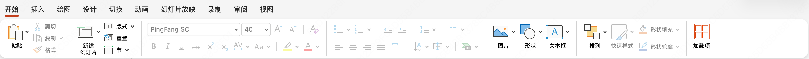

<!doctype html>
<html lang="zh-CN" class="journal-view">
<head>
  <meta charset="utf-8">
  <meta name="viewport" content="width=device-width, initial-scale=1">
  <title>CatPaw · 设计策略</title>
  <style>
    :root{color-scheme:light;--black:#111;--gray:#575757;--muted:#777;--line:#d8d8d8;--paper:#fafafa;--surround:#fafafa;--action-title-size:18px;--detail-label-size:10.8px;--detail-body-size:14.4px;--detail-copy-width:320px;--detail-demo-width:884px}
    *{box-sizing:border-box}
    html,body{margin:0;min-height:100%;font-family:"PingFang SC","Hiragino Sans GB","Microsoft YaHei",-apple-system,BlinkMacSystemFont,sans-serif;color:var(--black)}
    body{background:var(--surround)}
    button{font:inherit}
    button:focus-visible{outline:2px solid var(--black);outline-offset:3px}
    .shell{min-height:100dvh;display:grid;grid-template-rows:1fr auto;gap:12px;padding:24px}
    .stage{position:relative;align-self:center;justify-self:center;width:min(1440px,calc(100vw - 48px),calc((100dvh - 112px)*16/9));aspect-ratio:16/9;background:var(--paper);box-shadow:0 12px 38px #00000012;overflow:hidden}
    .canvas{position:absolute;left:0;top:0;width:1280px;height:720px;transform:scale(var(--scale,1));transform-origin:top left}
    .slide{position:absolute;inset:0;display:none;padding:0 48px 40px;background:var(--paper)}
    .slide.active{display:flex;flex-direction:column}
    .slide.preparing{visibility:hidden}
    .topline{position:relative;display:flex;flex:none;line-height:16px;align-items:center;justify-content:space-between;padding-bottom:13px;font-size:11.7px;font-weight:600;letter-spacing:.025em}
    .deck-progress{position:absolute;top:-1px;left:178px;display:grid;grid-template-columns:repeat(3,minmax(0,1fr));gap:18px;width:780px;letter-spacing:0}
    .deck-progress-step{display:block;color:#aaa;font-size:9.9px;font-weight:400;line-height:14px}
    .deck-progress-step.is-current{color:var(--black);font-weight:650}
    .deck-progress-step.is-complete{color:#aaa}
    .deck-progress-track{display:block;height:2px;margin-top:5px;background:#e6e6e6;overflow:hidden}
    .deck-progress-fill{display:block;width:var(--phase-progress,0%);height:100%;background:#ccc}
    .deck-progress-step.is-current .deck-progress-fill{background:var(--black)}
    .deck-points{position:absolute;top:31px;left:178px;width:780px;display:grid;grid-template-columns:repeat(3,minmax(0,1fr));gap:18px;font-size:9px;font-weight:400;letter-spacing:0}
    .deck-point-group{display:flex;flex-wrap:wrap;gap:6px 12px}
    .deck-point-group.is-current a{color:#575757}
    .deck-points a{color:#999;text-decoration:none;white-space:nowrap}
    .deck-points a:hover,.deck-points .deck-point-group a[aria-current="step"]{color:#111}
    .deck-points a[aria-current="step"]{font-weight:650}
    .topline .right{color:var(--gray);font-weight:400;font-variant-numeric:tabular-nums}
    .mainline{margin-top:24px;display:flex;align-items:baseline;flex-wrap:wrap;column-gap:12px;row-gap:6px;color:var(--gray);font-size:12.6px;line-height:1.6;flex-shrink:0}
    .mainline .number{flex:0 0 24px;font-weight:700;color:var(--black)}
    .mainline>span:nth-child(2){flex:1;min-width:0;overflow-wrap:anywhere}
    .mainline .status{margin-left:auto;font-size:10.8px;color:var(--gray)}
    h1,h2,h3,p{margin:0}
    h1{margin-top:22px;max-width:1128px;font-size:36px;font-weight:680;line-height:1.22;letter-spacing:-.045em}
    .body{display:grid;grid-template-columns:36% minmax(0,1fr);gap:52px;flex:1;min-height:0;margin-top:43px}
    .action-slide .mainline,.action-slide h1{max-width:var(--detail-copy-width)}
    .action-slide .mainline .status{margin-left:0;flex-basis:100%;white-space:nowrap}
    .action-slide .body{display:block;margin-top:30px}
    .action-slide .left-content{width:var(--detail-copy-width);padding-top:12px}
    .action-slide .user-concern{margin-bottom:14px;padding-bottom:10px}
    .action-slide .design-slot{position:absolute;top:60px;right:0px;bottom:40px;width:var(--detail-demo-width)}
    .action-slide .design-slot.has-demo{bottom:84px}
    .left-content{padding-top:22px;min-width:0}
    .label{font-size:var(--detail-label-size);letter-spacing:.08em;color:var(--muted);font-weight:620}
    .actions{border-top:0.5px solid var(--line);padding-top:20px;margin-top:34px;min-width:0}
    .action-list{margin-top:9px}
    .action{display:grid;grid-template-columns:30px minmax(0,1fr);gap:12px;padding:13px 0;border-bottom:0.5px solid var(--line)}
    .action:last-child{border-bottom:0}
    .action-no{font-size:10.8px;color:var(--muted);font-variant-numeric:tabular-nums;padding-top:3px}
    .action h3{font-size:13.5px;line-height:1.44;font-weight:600}
    .action-detail{min-width:0}
    .user-concern{display:block;margin-bottom:18px;padding-bottom:15px}
    .user-concern .label{display:block}
    .user-concern p{margin-top:14px;color:var(--gray);font-size:var(--action-title-size);line-height:1.5;font-weight:650}
    .action-detail h3{margin-top:14px;font-size:var(--action-title-size);line-height:1.5;font-weight:650}
    .action-detail p{margin-top:12px;font-size:var(--detail-body-size);line-height:1.75;color:var(--gray)}
    .feedback-component-table{width:100%;border-collapse:collapse;margin-top:12px;font-size:var(--detail-body-size);line-height:1.5;color:var(--gray)}
    .feedback-component-table th,.feedback-component-table td{text-align:left;padding:8px 0;border-bottom:0.5px solid var(--line);vertical-align:top}
    .feedback-component-table thead th{font-weight:500;color:var(--muted)}
    .feedback-component-table tbody th{width:32%;font-weight:500;color:var(--ink);white-space:nowrap;padding-right:12px}
    .design-slot{display:flex;flex-direction:column;min-width:0;min-height:0;margin:0;border:0.5px solid var(--line)}
    .design-slot.has-demo{border:0}
    #slide-3\.1-analysis .design-slot{border:0;box-shadow:none}
    .design-slot-body{display:grid;place-items:center;flex:1;min-height:0;color:#aaa;font-size:14.4px}
    .demo-slot-body{display:block;overflow:hidden;background:#bde5e8 url('./assets/demo-wallpaper.png') center / cover no-repeat}
    .demo-viewport{position:relative;width:100%;height:100%;overflow:hidden}
    .demo-viewport iframe{position:absolute;width:1200px;height:800px;border:0;transform-origin:top left;pointer-events:none;visibility:hidden}
    .demo-viewport iframe.is-ready{visibility:visible}
    .phase-demo-context{position:absolute;top:88px;left:430px;right:48px}
    .phase-demo-context .user-concern{margin-bottom:12px;padding-bottom:12px}
    .phase-demo-context .user-concern p{margin-top:8px}
    .phase-demo-context .action-detail h3{margin-top:8px}
    .phase-demo-context .action-detail p{margin-top:9px}
    .phase-demo-grid{position:absolute;top:300px;right:48px;bottom:28px;left:48px;display:grid;grid-template-columns:repeat(3,minmax(0,1fr));gap:12px}
    .phase-demo-card{display:flex;flex-direction:column;min-width:0;min-height:0;margin:0}
    .phase-demo-card figcaption{display:flex;align-items:baseline;gap:10px;min-height:39px}
    .phase-demo-card figcaption strong{font-size:15.3px;font-weight:650}
    .phase-demo-card figcaption span{color:var(--muted);font-size:10.8px}
    .phase-demo-card .demo-viewport{flex:1;min-height:0;height:auto;border:0.5px solid var(--line);border-radius:12px;background:var(--paper)}
    .phase-demo-card iframe{width:600px;height:620px}
    .process-pair{position:absolute;top:284px;right:48px;bottom:60px;left:48px;display:grid;grid-template-columns:1fr 1fr;gap:24px}
    .process-pair-panel{display:flex;flex-direction:column;min-width:0;min-height:0;margin:0}
.process-research-slide .mainline,.process-research-slide h1{max-width:var(--detail-copy-width)}
.process-research-slide .phase-demo-context{top:230px;left:48px;right:auto;width:var(--detail-copy-width)}
.process-research-slide .phase-demo-context .user-concern{margin-bottom:22px}
.process-research-slide .process-pair{top:96px;right:0px;bottom:84px;left:auto;width:var(--detail-demo-width);grid-template-columns:minmax(0,3fr) minmax(0,5fr);gap:20px}
.process-research-slide .process-pair-panel figcaption{min-height:34px;flex-wrap:wrap;align-content:flex-start;align-items:baseline;justify-content:center;text-align:center;gap:8px}
.process-research-slide .process-pair{grid-template-rows:auto minmax(0,1fr)}
.process-research-slide .process-pair::after{content:"";grid-area:2 / 1 / 3 / -1;border:0.5px solid var(--line);pointer-events:none}
.process-research-slide .process-pair-panel{grid-row:2;margin:12px}
.process-research-slide .process-pair-panel:first-of-type{grid-column:1;margin-right:0}
.process-research-slide .process-pair-panel:last-of-type{grid-column:2;margin-left:0}
.process-pair>.process-header{grid-column:1/-1;display:flex;flex-direction:column;align-items:center;gap:10px;min-width:0;text-align:center}
    .process-header .process-tabs{flex:none;margin:0}
.process-research-slide .process-pair-panel .demo-viewport{border:0;border-radius:0;background:transparent}
[data-process-plan]{padding:6px 0;border-bottom:0.5px solid var(--line);font-size:11.7px;line-height:1.7}
[data-process-plan][hidden]{display:none}

    .process-pair-panel figcaption{display:flex;align-items:baseline;gap:12px;min-height:34px;font-size:14.4px;font-weight:650}
    .process-pair-panel figcaption span{color:var(--muted);font-size:10.8px;font-weight:400}
    .process-pair-panel .demo-viewport{flex:1;min-height:0;border:0.5px solid var(--line);border-radius:10px;background:#fff}
    .process-pair-panel iframe{width:660px;height:500px}
    .process-schematic{--process-intent-height:70px;--process-block-gap:6px;--process-plan-compact-height:48px;position:relative;overflow:hidden;display:flex;flex:1;flex-direction:column;min-height:0;padding:16px 0 0}
    .process-tabs{display:inline-flex;align-items:center;gap:4px;border-bottom:0.5px solid var(--line)}
    .process-tabs button{margin-bottom:-1px;padding:5px 8px;border:0;border-bottom:0.5px solid transparent;background:transparent;color:var(--muted);font-size:14.4px;line-height:1.5;cursor:pointer}
    .process-tabs button[aria-selected="true"]{border-color:var(--black);color:var(--black);font-weight:650}
.process-map-status{display:block;position:relative;background:transparent;text-align:left;cursor:pointer;width:min(100%,440px);min-height:22px;margin:0 auto 8px;padding:7px 32px 7px 10px;border:0;border-bottom:0.5px solid #f2f2f2;border-radius:0;color:var(--muted);font-size:12.6px;line-height:1.5}
    .process-map-status::after{content:"";position:absolute;right:13px;top:12px;width:7px;height:7px;border-right:0.5px solid currentColor;border-bottom:0.5px solid currentColor;transform:rotate(-45deg);transition:transform .2s}
    .process-map-status[aria-expanded="true"]::after{transform:rotate(45deg)}
    .process-map-history{position:absolute;top:57px;left:50%;z-index:5;width:min(100%,440px);max-height:220px;overflow:auto;padding:7px 10px;border:0.5px solid var(--line);background:#fff;transform:translateX(-50%);box-shadow:0 5px 15px #0000000d}
    .process-map-history[hidden]{display:none}
    .process-map-history ol{margin:0;padding:0;list-style:none}
    .process-map-history li{padding:6px 0;color:var(--gray);font-size:11.7px;line-height:1.5}
    .process-map-history li::before{content:"✓";margin-right:10px;color:var(--muted)}
    .process-map-tools.is-idle{visibility:hidden}
    .process-tool-transfer{position:absolute!important;z-index:6;flex-direction:column;gap:5px;min-height:0;pointer-events:none;transform-origin:top left}
    .process-tool-transfer small{font-size:9.9px;font-weight:400}
    .process-map-columns{position:relative;flex:1;min-height:0}
    .process-map-column{width:min(100%,440px);margin:0 auto}
    .process-map-column[hidden],.process-map-column:not(.is-current){display:none}
    .process-map-body{display:flex;flex-direction:column;gap:var(--process-block-gap);padding-top:12px}
    .process-map-block{display:flex;align-items:center;justify-content:center;position:relative;overflow:hidden;padding:10px 6px;background:#e6e6e6;color:var(--black);font-size:11.7px;font-weight:600;line-height:1.5;text-align:center}
    .process-map-intent,.process-map-plan{min-height:var(--process-intent-height)}
.process-map-history,.process-map-block{border-radius:12px}
    .process-schematic[data-phase="before"][data-initial-step="intent"] .process-map-plan{visibility:hidden}
    .process-schematic[data-phase="before"][data-initial-step="planning"] .process-map-plan{animation:processMapResult .45s ease-out both}
    .process-map-plan-compact{min-height:var(--process-plan-compact-height);background:#f3f3f3;color:var(--muted)}
    .process-map-tools{min-height:126px;flex-direction:column;gap:5px}
    .process-map-tools small{font-size:9.9px;font-weight:400}
    .process-map-folded{height:14px;padding:0;background:#f3f3f3}
    .process-map-result{min-height:180px}
    .process-map-column.is-current .process-map-tools::after{content:"";position:absolute;inset:0;background:linear-gradient(105deg,transparent 20%,#ffffff99 50%,transparent 80%);transform:translateX(-100%);animation:processMapSweep 2s ease-in-out infinite}
    .process-map-column.is-current .process-map-result{animation:processMapResult .5s ease-out both}
    .process-map-caption{min-width:0;width:100%;margin:0;font-size:12.6px;line-height:1.5;color:var(--gray)}
    .process-schematic[data-transition="before-working"] .process-map-column[data-phase="before"]{position:absolute;top:0;left:50%;z-index:1;display:block;transform:translateX(-50%);pointer-events:none}
    .process-schematic[data-transition="before-working"] .process-map-column[data-phase="before"] .process-map-plan{visibility:hidden}
    .process-schematic[data-transition="before-working"] .process-map-intent{animation:processIntentExit .42s ease-in both}
    .process-schematic[data-transition="before-working"] .process-map-column[data-phase="working"]{position:relative;z-index:2}
    .process-schematic[data-transition="before-working"] .process-map-plan-compact{animation:processPlanMove .76s cubic-bezier(.22,.68,0,1) both}
    .process-schematic[data-transition="before-working"] .process-map-tools{animation:processToolsEnter .42s .72s cubic-bezier(.22,.68,0,1) both}
    @keyframes processIntentExit{from{opacity:1;transform:translateX(0)}to{opacity:0;transform:translateX(-120%)}}
    @keyframes processPlanMove{0%{transform:translateY(calc(var(--process-intent-height) + var(--process-block-gap)));height:var(--process-intent-height);background:#e6e6e6;color:var(--black)}55%{transform:translateY(0);height:var(--process-intent-height);background:#e6e6e6;color:var(--black)}100%{transform:translateY(0);height:var(--process-plan-compact-height);background:#f3f3f3;color:var(--muted)}}
    @keyframes processToolsEnter{from{opacity:0;transform:translateX(120%)}to{opacity:1;transform:translateX(0)}}
    @media(prefers-reduced-motion:reduce){.process-schematic[data-transition="before-working"] .process-map-column[data-phase="before"]{display:none}.process-schematic[data-transition="before-working"] :is(.process-map-intent,.process-map-plan-compact,.process-map-tools){animation:none}}
    @keyframes processMapSweep{to{transform:translateX(100%)}}
    @keyframes processMapResult{from{opacity:0;transform:translateY(8px)}to{opacity:1;transform:translateY(0)}}
    @media(prefers-reduced-motion:reduce){.process-map-column{transition:none}.process-map-column.is-current,.process-map-column.is-current .process-map-tools::after,.process-map-column.is-current .process-map-result,.process-schematic[data-phase="before"] .process-map-column .process-map-plan{animation:none}}
    .layout-demo-slide .mainline,.layout-demo-slide h1{max-width:var(--detail-copy-width)}
    .layout-demo-slide .phase-demo-context{top:230px;left:48px;right:auto;width:var(--detail-copy-width)}
    .layout-demo-slide .phase-demo-context .user-concern{margin-bottom:22px}
    .layout-demo-slide .phase-demo-grid{top:60px;right:0px;bottom:68px;left:auto;width:var(--detail-demo-width);grid-template-columns:repeat(2,minmax(0,1fr));grid-template-rows:repeat(2,minmax(0,1fr));gap:20px 16px}
    .layout-demo-card figcaption{flex-direction:row;align-items:baseline;justify-content:space-between;gap:12px;min-height:0}
    .layout-demo-card figcaption strong{flex:none}
    .layout-demo-status{margin-left:10px;color:var(--muted);font-size:10.8px;font-weight:400}
    .layout-demo-card figcaption span{margin-left:auto;text-align:right;white-space:nowrap}
    .layout-demo-description{min-height:1.5em;margin:6px 0 6px;color:var(--gray);font-size:10.8px;line-height:1.5}
    .layout-demo-card .demo-viewport{border:0;border-radius:0;background:#bde5e8 url('./assets/demo-wallpaper.png') center / cover no-repeat}
    .layout-demo-card iframe{width:1200px;height:800px}
    .process-demo{display:flex;flex-direction:column;width:100%;height:100%;padding:27px 30px;background:#fff}
    .process-demo-heading{padding-bottom:16px;border-bottom:0.5px solid var(--line);font-size:11.7px;font-weight:600}
    .process-demo-flow{display:grid;grid-template-rows:repeat(3,minmax(0,1fr));flex:1;min-height:0}
    .process-demo-phase{display:grid;grid-template-columns:114px minmax(0,1fr);gap:21px;min-height:0;padding:21px 0;border-bottom:0.5px solid var(--line)}
    .process-demo-phase:last-child{border-bottom:0}
    .process-demo-phase>span{color:var(--muted);font-size:10.8px;font-weight:600}
    .process-demo-content{min-width:0;font-size:12.6px;line-height:1.45}
    .process-demo-content strong{display:block;font-weight:650}
    .process-demo-line{margin-top:10px;color:var(--gray);font-size:10.8px}
    .process-demo-box{margin-top:9px;padding:9px 12px;border:0.5px solid var(--line);border-radius:8px;color:var(--gray);font-size:10.8px}
    .process-demo-box b{color:var(--black);font-weight:600}
    .process-demo-current{border-color:var(--black);color:var(--black)}
    .process-demo-columns{display:grid;grid-template-columns:1fr 1fr;gap:8px}
    .process-demo-columns .process-demo-box{margin-top:9px}
    .strategy-diagram{width:100%;height:100%;padding:27px 30px;background:var(--paper);color:var(--black)}
    .strategy-diagram-heading{padding-bottom:16px;border-bottom:0.5px solid var(--line);font-size:11.7px;font-weight:600}
    .strategy-diagram-caption{margin-top:18px;color:var(--gray);font-size:11.7px;line-height:1.5}
    .workspace-layout{display:grid;gap:14px;height:310px;margin-top:25px;padding:14px;border:0.5px solid var(--line);border-radius:12px;background:#fafafa}
    .workspace-layout.face{grid-template-columns:1.7fr 1fr}
    .workspace-layout.side{grid-template-columns:1.35fr 1fr}
    .workspace-layout.call{display:block;position:relative}
    .workspace-pane{min-width:0;padding:15px;border:0.5px solid var(--line);border-radius:8px;background:#fff}
    .workspace-pane>strong{display:block;padding-bottom:10px;border-bottom:0.5px solid var(--line);font-size:10.8px;font-weight:650}
    .workspace-chat-line{margin-top:15px;padding:11px;border-radius:8px;background:#f5f5f5;font-size:10.8px;line-height:1.5}
    .workspace-chat-line.reply{margin-left:32px;background:#fff;border:0.5px solid var(--line)}
    .workspace-chat-input{margin-top:25px;padding:12px;border:0.5px solid var(--line);border-radius:8px;color:var(--muted);font-size:10.8px}
    .workspace-artifact{display:grid;grid-template-columns:44px 1fr;gap:10px;height:233px;margin-top:10px}
    .workspace-thumbs{display:flex;flex-direction:column;gap:7px}
    .workspace-thumbs i{display:block;height:34px;border:0.5px solid var(--line);background:#f5f5f5}
    .workspace-thumbs i:first-child{border-color:var(--black)}
    .workspace-page{position:relative;padding:17px;border:0.5px solid var(--line);background:#fff}
    .workspace-page b{display:block;width:68%;height:8px;background:#333}
    .workspace-page i{display:block;height:6px;margin-top:13px;background:#ddd}
    .workspace-page i:nth-of-type(2){width:81%}
    .workspace-page i:nth-of-type(3){width:56%}
    .workspace-layout.call .workspace-pane{height:100%}
    .workspace-layout.call .workspace-artifact{height:233px}
    .workspace-annotation{position:absolute;right:19px;top:112px;padding:8px 10px;border:0.5px solid var(--black);border-radius:7px;background:#fff;font-size:9.9px}
    .workspace-call-entry{position:absolute;right:30px;bottom:28px;padding:10px 13px;border:0.5px solid var(--black);border-radius:18px;background:#fff;font-size:10.8px}
    .workspace-key{display:flex;gap:17px;margin-top:17px;color:var(--gray);font-size:10.8px}
    .workspace-key strong{color:var(--black);font-weight:650}
    .participation-chart{width:100%;height:348px;margin-top:18px}
    .participation-chart svg{display:block;width:100%;height:100%}
    .participation-chart text{font-family:inherit;fill:var(--black)}
    .participation-chart .axis-label{font-size:12.6px;font-weight:650}
    .participation-chart .axis-end{font-size:9.9px;fill:var(--muted)}
    .participation-chart .point-title{font-size:13.5px;font-weight:650}
    .participation-chart .point-note{font-size:9.9px;fill:var(--gray)}
    .participation-chart .point text{paint-order:stroke;stroke:#fff;stroke-width:4px;stroke-linejoin:round}
    .participation-chart .point circle{fill:#fff;stroke:var(--black);stroke-width:0.5}
    .participation-chart .point.pet circle{fill:var(--black)}
    .mode-panels{display:grid;grid-template-columns:1fr 1fr;gap:16px;margin-top:28px}
    .mode-panel{min-height:280px;padding:20px;border:0.5px solid var(--line);border-radius:10px}
    .mode-panel.is-default{border-color:var(--black)}
    .mode-panel small{display:block;color:var(--muted);font-size:9.9px}
    .mode-panel h3{margin-top:8px;font-size:17.1px}
    .mode-panel p{margin-top:24px;font-size:13.5px;line-height:1.55}
    .mode-panel ul{margin:22px 0 0;padding:0;list-style:none}
    .mode-panel li{padding:9px 0;border-top:0.5px solid var(--line);color:var(--gray);font-size:10.8px}
    .mode-shared{margin-top:18px;padding:12px 16px;border:0.5px solid var(--line);color:var(--gray);font-size:10.8px}
    .result-formats{display:grid;grid-template-columns:repeat(3,1fr);gap:14px;margin-top:28px}
    .result-format{min-height:280px;padding:18px;border:0.5px solid var(--line);border-radius:10px}
    .result-format small,.result-format strong{display:block}
    .result-format small{color:var(--muted);font-size:9.9px}
    .result-format strong{margin-top:8px;font-size:15.3px}
    .result-format .visual{display:flex;align-items:flex-end;gap:10px;height:100px;margin-top:30px;padding-bottom:10px;border-bottom:0.5px solid var(--line)}
    .result-format .visual i{display:block;flex:1;background:#d9d9d9}
    .result-format .visual i:last-child{background:#333}
    .result-format .compare{display:grid;grid-template-columns:1fr 1fr;gap:8px;margin-top:30px}
    .result-format .compare span{display:grid;place-items:center;height:100px;border:0.5px solid var(--line);font-size:10.8px}
    .result-format .compare span:last-child{border-color:var(--black)}
    .result-format .plain{margin-top:30px;font-size:19.8px;font-weight:650;line-height:1.35}
    .result-format p{margin-top:17px;color:var(--gray);font-size:10.8px;line-height:1.5}
    .result-review{display:grid;grid-template-columns:1.35fr 1fr;gap:15px;margin-top:25px}
    .result-review-main,.result-review-side{min-height:295px;padding:21px;border:0.5px solid var(--line);border-radius:10px}
    .result-review-main h3,.result-review-side h3{font-size:15.3px}
    .result-review-main p,.result-review-side p{margin-top:13px;color:var(--gray);font-size:10.8px;line-height:1.55}
    .result-review-row{display:flex;justify-content:space-between;gap:8px;padding:12px 0;border-bottom:0.5px solid var(--line);font-size:11.7px}
    .result-review-row:first-of-type{margin-top:20px}
    .result-review-row b{font-weight:650}
    .result-review-link{display:block;margin-top:21px;padding-top:12px;border-top:0.5px solid var(--line);font-size:10.8px}
    .reply-analysis-top{display:grid;grid-template-columns:.8fr 1.2fr;gap:32px;margin-top:16px}
    .reply-analysis-top h2,.reply-analysis-top p{margin-top:8px;font-size:18px;line-height:1.4;font-weight:650}
    .reply-analysis-top p{color:var(--gray)}
    .reply-analysis-map{margin:16px 0 0;border:0;height:348px;flex:none}
    .reply-decision-map{display:block;width:100%;height:100%;font-family:inherit}
    .reply-decision-map text{fill:var(--black);font-size:12.6px}
    .reply-decision-map .reply-map-title{font-size:18px;font-weight:650}
    .reply-decision-map .reply-map-question{font-size:12.6px;fill:var(--gray)}
    .reply-decision-map .reply-map-label{font-size:10.8px;fill:var(--muted)}
    .reply-decision-map .reply-map-answer{font-size:21.6px;font-weight:650}
    .reply-decision-map .reply-map-summary{font-size:16.2px;font-weight:650}
    .reply-decision-map .reply-map-strong{font-weight:650}
    .reply-analysis-rule{margin-top:12px;font-size:12.6px;line-height:1.6;color:var(--gray)}
    .reply-analysis-rule strong{color:var(--black);font-weight:650}
    .reply-analysis-sources{margin-top:10px;font-size:9.9px;line-height:1.5;color:var(--muted)}
    .reply-flow-intro{margin-top:18px;font-size:15.3px;line-height:1.6;color:var(--gray)}
    .reply-flow-map{margin:22px 0 0;width:100%}
    .reply-flow-map svg{display:block;width:100%;height:370px;overflow:visible}
    .reply-flow-map .node{fill:none;stroke:#ccc;stroke-width:0.5}
    .reply-flow-map .decision{fill:none;stroke:#aaa;stroke-width:0.5}
    .reply-flow-map .edge{fill:none;stroke:#888;stroke-width:0.5;marker-end:url(#reply-flow-arrow)}
    .reply-flow-map text{font-family:inherit;fill:var(--black);font-size:16.2px;text-anchor:middle}
    .reply-flow-map .note{font-size:12.6px;fill:var(--gray)}
    .reply-flow-map .phase{font-size:11.7px;fill:var(--muted);text-anchor:start;font-weight:600}
    .reply-flow-caption{margin-top:12px;font-size:12.6px;line-height:1.6;color:var(--gray)}
    .reply-analysis-sources a{color:inherit;text-underline-offset:3px}
    .reply-table-styles{display:flex;flex-direction:column;gap:16px;padding:24px;min-height:0}
    .reply-table-styles>h2{font-size:18px;line-height:1.4}
    .reply-table-grid{display:grid;grid-template-columns:1fr 1fr;gap:18px;min-height:0}
    .reply-table-panel{min-width:0}
    .reply-table-panel:last-child{grid-column:1/-1}
    .reply-table-panel h3{font-size:13.5px;line-height:1.5;margin-bottom:10px}
    .reply-table-panel h3 span{margin-left:8px;font-size:10.8px;color:var(--muted);font-weight:400}
    .reply-table-panel table{width:100%;border-collapse:collapse;font-size:11.7px;font-variant-numeric:tabular-nums;line-height:1.5}
    .reply-table-panel :is(th,td){padding:8px 6px;border-bottom:0.5px solid var(--line);text-align:right;white-space:nowrap}
    .reply-table-panel th{color:var(--gray);font-weight:500;background:#f6f6f6}
    .reply-table-panel tr>:first-child{text-align:left}
    .reply-table-panel .is-preferred{font-weight:650;color:#237348}
    .reply-table-panel .is-risk{color:#996425}
    .reply-table-bar{display:inline-block;vertical-align:middle;height:6px;width:100px;background:#eee;margin-right:12px;border-radius:2px;overflow:hidden}
    .reply-table-bar i{display:block;height:100%;background:#8baf9a}
    .reply-table-styles>p{color:var(--muted);font-size:10.8px;line-height:1.5}
    .control-flow{display:grid;grid-template-columns:repeat(3,minmax(0,1fr));gap:14px;margin-top:28px}
    .control-step{min-height:275px;padding:19px;border:0.5px solid var(--line);border-radius:10px}
    .control-step.active{border-color:var(--black)}
    .control-step small{display:block;color:var(--muted);font-size:9.9px}
    .control-step h3{margin-top:12px;font-size:15.3px;line-height:1.4}
    .control-step p{margin-top:25px;color:var(--gray);font-size:11.7px;line-height:1.55}
    .control-step .control-line{margin-top:21px;padding-top:12px;border-top:0.5px solid var(--line);font-size:10.8px;line-height:1.45}
    .recovery-flow{display:grid;grid-template-columns:1fr 1fr;gap:16px;margin-top:28px}
    .recovery-panel{min-height:300px;padding:21px;border:0.5px solid var(--line);border-radius:10px}
    .recovery-panel h3{font-size:16.2px}
    .recovery-panel p{margin-top:18px;color:var(--gray);font-size:11.7px;line-height:1.6}
    .recovery-panel ul{margin:23px 0 0;padding:0;list-style:none}
    .recovery-panel li{padding:10px 0;border-top:0.5px solid var(--line);font-size:10.8px;line-height:1.4}
    .recovery-panel li strong{font-weight:650}
    .continuation-flow{display:grid;grid-template-columns:minmax(0,1fr) 32px minmax(0,1fr);gap:10px;align-items:center;margin-top:28px}
    .continuation-card{min-height:300px;padding:20px;border:0.5px solid var(--line);border-radius:10px}
    .continuation-card small{display:block;color:var(--muted);font-size:9.9px}
    .continuation-card h3{margin-top:10px;font-size:16.2px;line-height:1.35}
    .continuation-card p{margin-top:18px;color:var(--gray);font-size:11.7px;line-height:1.55}
    .continuation-card ul{margin:20px 0 0;padding:0;list-style:none}
    .continuation-card li{padding:10px 0;border-top:0.5px solid var(--line);font-size:10.8px;line-height:1.4}
    .continuation-card li strong{font-weight:650}
    .continuation-arrow{color:var(--gray);font-size:22.5px;text-align:center}
    .design-note{margin-top:20px;padding-top:14px;border-top:0.5px solid var(--line);color:var(--gray);font-size:12.6px;line-height:1.5}
    .capability-cards{display:grid;grid-template-columns:repeat(2,minmax(0,1fr));gap:10px 8px;margin-top:14px}
    .capability-item{min-width:0}
    .capability-card{position:relative;height:80px;padding:11px;border:0.5px solid var(--line);border-radius:12px;background:var(--paper);box-shadow:0 3px 10px #00000009;overflow:hidden}
    .capability-card strong,.capability-card small{position:relative;z-index:1;display:block;white-space:nowrap}
    .capability-card strong{font-size:11.7px;line-height:1.3;font-weight:650}
    .capability-card small{margin-top:3px;color:var(--muted);font-size:9px;line-height:1.3}
    .capability-card .capability-illustration{position:absolute;right:-8px;bottom:-12px;width:88px;height:88px;object-fit:contain;opacity:.4;pointer-events:none}
    .capability-evidence{margin-top:4px;color:var(--gray);font-size:8.1px;line-height:1.3}
    .capability-source{margin-top:8px;color:var(--muted);font-size:9px;line-height:1.35}
    .capability-source a{color:inherit;text-decoration:underline;text-underline-offset:2px}
    .story-kicker{margin-top:24px;flex-shrink:0;line-height:1.6;color:var(--gray);font-size:12.6px;font-weight:600}
    .story-slide h1{margin-top:20px;max-width:1010px;font-size:42.3px;line-height:1.22}
    .story-copy{margin-top:26px;max-width:930px;color:var(--gray);font-size:18.9px;line-height:1.6}
    .story-steps{display:grid;grid-template-columns:repeat(3,1fr);gap:30px;margin-top:auto;padding-top:23px;border-top:0.5px solid var(--black)}
    .story-step{min-height:104px;border-right:0.5px solid var(--line)}
    .story-step:last-child{border-right:0}
    .story-step span{display:block;color:var(--muted);font-size:10.8px}
    .story-step strong{display:block;margin-top:13px;font-size:17.1px;line-height:1.35;font-weight:650}
    .chapter-slide .story-kicker{margin-top:24px;max-width:510px}
    .chapter-slide h1{max-width:510px;font-size:39.6px;line-height:1.3;margin-top:24px}
    .chapter-slide .story-copy{max-width:500px;margin-top:30px;font-size:18px;line-height:1.7}
    .chapter-questions{position:absolute;top:124px;right:48px;width:550px;bottom:48px;display:flex;flex-direction:column;justify-content:center}
    .chapter-question-list{display:flex;flex-direction:column;gap:28px;margin:18px 0 0;padding:0;list-style:none}
    .chapter-flow-headings,.chapter-flow-node{display:grid;grid-template-columns:minmax(0,1fr) 126px;column-gap:24px;align-items:center}
    #slide-strategy-1 .chapter-flow-headings{text-align:center}
    .chapter-flow-node{position:relative}
    .chapter-flow-node:not(:last-child)::after{content:"";position:absolute;left:calc((100% - 150px)/2);top:100%;height:21px;border-left:0.5px solid var(--black);transform:translateX(-50%)}
    .chapter-flow-node:not(:last-child)::before{content:"";position:absolute;left:calc((100% - 150px)/2);top:calc(100% + 20px);border-left:5px solid transparent;border-right:5px solid transparent;border-top:7px solid var(--black);transform:translateX(-50%)}
    .chapter-flow-step{display:flex;align-items:center;gap:9px;font-size:15.3px;line-height:1.4;white-space:nowrap}
    .chapter-flow-step span{color:var(--muted);font-size:10.8px;font-variant-numeric:tabular-nums}
    .chapter-flow-step strong{font-weight:600}
    .chapter-flow-node p{display:flex;align-items:center;min-height:88px;padding:13px 18px;border:0.5px solid var(--black);font-size:15.3px;line-height:1.5;font-weight:600}
    .overview-slide .story-kicker{margin-top:24px}
    .overview-slide h1{font-size:37.8px;max-width:1120px}
    .overview-slide .story-copy{margin-top:15px;max-width:1060px;font-size:17.1px}
    .scene-flow{display:grid;grid-template-columns:minmax(0,1fr) 78px minmax(0,1fr) 78px minmax(0,1fr);align-items:stretch;flex:1;min-height:0;margin-top:36px}
    .scene-flow-node{display:flex;flex-direction:column;min-width:0;border-top:0.5px solid var(--black);padding:19px 0 52px}
    .scene-flow-node .step-number{color:var(--muted);font-size:10.8px;font-variant-numeric:tabular-nums}
    .scene-flow-node h2{margin-top:16px;font-size:19.8px;line-height:1.3;font-weight:650}
    .scene-flow-node .question{display:flex;align-items:center;min-height:120px;flex:none;margin-top:27px;padding:18px;border:0.5px solid var(--line);font-size:21.6px;line-height:1.42;font-weight:620}
    .scene-flow-node .purpose{margin-top:auto;padding-top:16px;color:var(--gray);font-size:18px;line-height:1.45}
    .scene-flow-node .purpose span{display:block;margin-bottom:8px;color:var(--muted);font-size:12.6px}
    .scene-flow-connector{display:flex;flex-direction:column;align-items:center;align-self:start;gap:13px;margin-top:164px;padding:0 8px;color:var(--gray)}
    .scene-flow-connector .arrow{position:relative;display:block;width:100%;height:1px;background:var(--black)}
    .scene-flow-connector .arrow:after{content:"";position:absolute;right:0;top:-5px;width:10px;height:10px;border-top:0.5px solid var(--black);border-right:0.5px solid var(--black);transform:rotate(45deg)}
    .scene-flow-connector span:last-child{font-size:9.9px;line-height:1.3;text-align:center}
    .catalog-slide .story-kicker{margin-top:24px}
    .catalog-slide h1{margin-top:9px;font-size:32.4px}
    .catalog-grid{display:grid;grid-template-columns:repeat(3,minmax(0,1fr));gap:22px;flex:1;min-height:0;margin-top:22px}
    .catalog-column{min-width:0;border-top:0.5px solid var(--black);padding-top:12px}
    .catalog-column>.scene{display:block;color:var(--muted);font-size:10.8px}
    .catalog-column>h2{margin-top:5px;font-size:15.3px;line-height:1.3}
    .catalog-point{margin-top:12px}
    .catalog-point-heading{display:flex;align-items:baseline;gap:8px;font-size:12.6px;line-height:1.35}
    .catalog-point-heading span{flex:none;color:var(--muted);font-size:10.8px;font-variant-numeric:tabular-nums}
    .catalog-point-heading strong{font-weight:650}
    .catalog-point-heading>strong{flex:none}
    .catalog-point-concern{flex:1;min-width:0;margin-left:8px;color:var(--gray);font-size:10.8px;font-weight:400;line-height:1.45}
    .catalog-point-concern .concern-label{margin-right:6px;color:var(--muted);font-size:10.8px}
    .catalog-point ol{margin:5px 0 0;padding:0;list-style:none}
    .catalog-point li{display:grid;grid-template-columns:45px minmax(0,1fr);gap:5px;padding:2px 0;color:var(--gray);font-size:10.8px;line-height:1.35}
    .catalog-point li span:first-child{color:var(--muted);font-variant-numeric:tabular-nums}
    .recovery-analysis h1{font-size:30.6px;margin-top:18px}
    .recovery-analysis-intro{font-size:14.4px;line-height:1.5;color:var(--gray);margin-top:12px}
    .recovery-analysis-table{width:100%;border-collapse:collapse;table-layout:fixed;margin-top:20px;font-size:12.6px;line-height:1.5}
    .recovery-analysis-table th,.recovery-analysis-table td{text-align:left;vertical-align:top;padding:9px 12px;border-bottom:0.5px solid #e8e8e8}
    .recovery-analysis-table thead th{color:var(--muted);font-size:11.7px;font-weight:500;padding-top:0;padding-bottom:8px}
    .recovery-analysis-table tbody+tbody tr:first-child>*{border-top:0.5px solid var(--line);padding-top:21px}
    .recovery-analysis-table tbody:not(:last-of-type) tr:last-child>*{padding-bottom:21px}
    .recovery-analysis-table tbody th{font-size:14.4px;font-weight:650;padding-left:0}
    .recovery-analysis-table tbody th span{display:block;font-size:10.8px;font-weight:400;color:var(--muted);margin-top:6px}
    .recovery-analysis-table td:nth-last-child(2){color:var(--gray)}
    .recovery-analysis-table thead th:first-child{padding-left:0}
    .recovery-analysis-note{font-size:11.7px;color:var(--muted);margin-top:auto;padding-top:14px}
    .interruption-research .mainline,.interruption-research h1{max-width:var(--detail-copy-width)}
    .interruption-research-copy{width:290px;margin-top:28px}
    .interruption-research-copy .interruption-research-heading{display:block;margin-top:0}
    .interruption-research-copy h2{margin-top:12px}
    .interruption-research-copy .research-intro{margin-top:14px;line-height:1.65}
    .interruption-research-copy .interruption-feedback{margin-top:22px;line-height:1.6}
    .interruption-research-copy .interruption-feedback strong{display:block;margin-bottom:6px}
    .interruption-research .interruption-flowchart-vertical{position:absolute;top:88px;right:0px;width:860px;height:590px;margin:0}
    .interruption-flowchart-vertical text{font-size:13.5px}
    .interruption-flowchart-vertical .flow-small{font-size:10.8px}
    .interruption-research-heading{display:flex;align-items:baseline;gap:12px;margin-top:12px}
    .interruption-research-heading h2{font-size:19.8px;line-height:1.35;font-weight:650}
    .interruption-research .research-intro{margin-top:8px;font-size:14.4px;line-height:1.5;color:var(--gray)}
    .interruption-flowchart{display:block;width:100%;height:326px;margin-top:12px;flex:none}
    .interruption-flowchart text{fill:var(--black);font-size:14.4px;text-anchor:middle}
    .interruption-flowchart .flow-small{font-size:11.7px;fill:var(--gray)}
    .interruption-flowchart .flow-branch{font-size:12.6px;fill:var(--gray)}
    .interruption-flowchart .flow-node{fill:var(--paper);stroke:var(--black);stroke-width:0.5}
    .interruption-feedback{margin-top:8px;font-size:12.6px;line-height:1.5;color:var(--gray)}
    .interruption-feedback strong{margin-right:8px;font-size:13.5px;font-weight:650;color:var(--black)}
    .evolution-slide .story-kicker{margin-top:24px}
    .evolution-slide h1{font-size:39.6px;max-width:1100px}
    .evolution-slide .story-copy{margin-top:17px;max-width:1070px;font-size:17.1px}
    .evolution-grid{display:grid;grid-template-columns:repeat(3,minmax(0,1fr));gap:28px;flex:1;min-height:0;margin-top:42px}
    .evolution-phase{display:flex;flex-direction:column;border-top:0.5px solid var(--line);padding-top:20px;min-width:0}
    .evolution-phase.current{border-top:0.5px solid var(--black);padding-top:18px}
    .evolution-phase .phase-no{color:var(--muted);font-size:10.8px}
    .evolution-phase h2{margin-top:19px;font-size:20.7px;line-height:1.3}
    .evolution-phase .phase-type{margin-top:8px;color:var(--gray);font-size:13.5px}
    .evolution-phase p{margin-top:24px;max-width:345px;color:var(--gray);font-size:13.5px;line-height:1.62}
    .evolution-phase.current h2,.evolution-phase.current .phase-type{color:var(--black)}
    .evolution-phase .phase-state{margin-top:auto;padding-top:14px;border-top:0.5px solid var(--line);font-size:11.7px;color:var(--gray)}
    .evolution-phase.current .phase-state{font-weight:650;color:var(--black)}
    .context-slide .story-kicker{margin-top:24px}
    .context-slide h1{font-size:37.8px;max-width:1110px}
    .context-slide .story-copy{margin-top:15px;max-width:1050px;font-size:16.2px}
    .context-grid{display:grid;grid-template-columns:minmax(0,1.35fr) minmax(0,1fr);grid-template-rows:repeat(2,minmax(0,1fr));column-gap:44px;row-gap:22px;flex:1;min-height:0;margin-top:32px}
    .context-block{border-top:0.5px solid var(--black);padding-top:19px;min-width:0}
    .context-block:first-child{grid-row:1 / -1}
    .context-block:not(:first-child){padding-top:12px}
    .context-block .block-label{color:var(--muted);font-size:10.8px}
    .context-block h2{margin-top:20px;font-size:19.8px;line-height:1.36}
    .context-block p{margin-top:16px;color:var(--gray);font-size:13.5px;line-height:1.62}
    .context-block .block-note{display:block;margin-top:18px;color:var(--black);font-size:11.7px;font-weight:600;line-height:1.5}
    .context-block:not(:first-child) h2{margin-top:10px;font-size:18px}
    .context-block:not(:first-child) p{margin-top:9px;font-size:12.6px;line-height:1.45}
    .context-block:not(:first-child) .block-note{margin-top:8px;font-size:10.8px}
    .context-evidence{display:grid;grid-template-columns:repeat(2,minmax(0,1fr));gap:18px;margin-top:18px}
    .context-evidence p{margin:0;padding:8px 0;border-top:0.5px solid var(--line);font-size:11.7px;line-height:1.45}
    .context-evidence strong{display:block;color:var(--black);font-weight:650}
    .context-evidence span{display:block;margin-top:3px}
    .context-block:first-child .block-note{margin-top:10px;color:var(--gray);font-size:10.8px;font-weight:400}
    .context-sources{display:flex;gap:20px;align-items:center;border-top:0.5px solid var(--line);padding-top:13px;color:var(--muted);font-size:9.9px}
    .context-sources a{color:inherit;text-decoration:underline;text-underline-offset:2px}
    @media print{
      @page{size:16in 9in;margin:0}
      html,body{width:16in;margin:0;background:var(--paper);print-color-adjust:exact;-webkit-print-color-adjust:exact}
      .shell{display:block;padding:0}.stage{width:16in;height:9in;aspect-ratio:auto;box-shadow:none;overflow:visible}.canvas{position:static;width:auto;height:auto;transform:none}
      .slide,.slide.active{position:relative;display:flex;width:16in;height:9in;page-break-after:always;break-after:page}
      .demo-viewport iframe{visibility:visible}
    }

    .genui-research h1{font-size:34.2px;margin-top:18px}
    .genui-compare{width:100%;border-collapse:collapse;margin-top:24px;table-layout:fixed;font-size:15.3px;line-height:1.45}
    .genui-compare th,.genui-compare td{text-align:left;vertical-align:top;padding:12px 16px;border-bottom:0.5px solid var(--line)}
    .genui-compare th:first-child,.genui-compare td:first-child{width:132px;padding-left:0;color:var(--gray);font-size:12.6px}
    .genui-compare th{font-size:20.7px;font-weight:650;padding-top:0}
    .genui-compare small{display:block;font-size:11.7px;line-height:1.5;color:var(--gray);margin-top:5px}
    .genui-choice{display:grid;grid-template-columns:310px 1fr;gap:32px;margin-top:24px;padding-top:6px}
    .genui-choice h2{font-size:21.6px;line-height:1.4;margin:7px 0 0}
    .genui-choice p{font-size:15.3px;line-height:1.6;margin:4px 0 0;color:var(--gray)}
    .genui-research .reply-analysis-sources{margin-top:auto;font-size:9.9px}

    .widget-modules h1{font-size:34.2px;margin-top:18px}
    .widget-modules-table{width:100%;table-layout:fixed;border-collapse:collapse;margin-top:22px;font-size:15.3px;line-height:1.5}
    .widget-modules-table th,.widget-modules-table td{padding:12px 16px;border-bottom:0.5px solid var(--line);text-align:left;vertical-align:top}
    .widget-modules-table th{font-size:12.6px;color:var(--gray);font-weight:500;padding-top:0}
    .widget-modules-table th:first-child,.widget-modules-table td:first-child{width:238px;padding-left:0}
    .widget-modules-table th:nth-child(2){width:250px}
    .widget-modules-table td:first-child{font-weight:650}
    .widget-modules-priority{font-size:15.3px;line-height:1.6;margin:18px 0 0}
    .widget-modules-shared{font-size:12.6px;line-height:1.6;color:var(--gray);margin:10px 0 0}
    .widget-modules .reply-analysis-sources{margin-top:auto}
    /* Compare the original ribbon with the contextual tools used by the demo. */
    .toolbar-comparison{flex:none;padding:0 0 16px;display:grid;gap:14px}
    .toolbar-comparison-heading{display:flex;align-items:baseline;justify-content:space-between;gap:16px;margin-bottom:8px}
    .toolbar-comparison-heading strong{font-size:15.3px;font-weight:650}
    .toolbar-comparison-heading span{font-size:11.7px;color:var(--muted)}
    .toolbar-original{display:block;width:100%;height:auto;border-radius:8px}
    .toolbar-current{display:flex;align-items:center;gap:16px}
    .toolbar-current-state{flex:none;font-size:11.7px;color:var(--muted)}
    .toolbar-context-preview{display:flex;align-items:center;gap:14px;padding:10px 14px;border:0.5px solid var(--line);border-radius:12px;background:#fff;font-size:12.6px;white-space:nowrap}
    .toolbar-context-preview img{width:18px;height:18px;object-fit:contain}
    .toolbar-context-preview .toolbar-separator{height:22px;width:1px;background:var(--line)}
    .toolbar-comparison-caption{font-size:11.7px;color:var(--gray);line-height:1.5;margin-top:8px}
    #slide-3\.2 .demo-slot-body{border-radius:10px}
    .slide .design-slot,
    .slide .phase-demo-card .demo-viewport{box-shadow:0 2px 6px rgba(0,0,0,.025),0 8px 24px rgba(0,0,0,.045)}
    .interruption-action-slide .left-content{position:absolute;top:150px;left:48px;width:544px;padding:0;display:grid;grid-template-columns:180px minmax(0,1fr);gap:24px}
    .interruption-action-slide .user-concern p,.interruption-action-slide .action-detail h3{font-size:15px;margin-top:8px}
    .interruption-action-slide .action-detail p{font-size:12.6px;line-height:1.6;margin-top:8px}
    .interruption-action-slide .design-slot{width:640px}
    .interruption-route-map{position:absolute;left:48px;top:270px;bottom:90px;width:544px;margin:0;display:flex;flex-direction:column}
    .interruption-route-map figcaption{font-size:12px;line-height:1.5;color:#21835b;margin-bottom:12px}
    .interruption-route-map .interruption-flowchart{width:100%;height:100%;min-height:0;margin:0;flex:1}
    .interruption-route-map .flow-node{stroke:#ddd;fill:none}
    .interruption-route-map text{fill:#aaa}
    .interruption-route-map path[data-flow-routes]{stroke:#ddd}
    .interruption-route-map [data-flow-active="true"] .flow-node{stroke:#21835b;fill:#edf7f1}
    .interruption-route-map [data-flow-active="true"] text,.interruption-route-map text[data-flow-active="true"]{fill:#21835b}
    .interruption-route-map path[data-flow-active="true"]{stroke:#21835b}
    .slide h1 .title-status{font-size:.5em;font-weight:400;white-space:nowrap}
    /* Reserve bold weight for each slide's main heading. */
    .slide :not(h1):not(h1 *){font-weight:400!important}
    .slide h1 *{font-weight:inherit}
  </style>
  <link rel="stylesheet" href="./strategy-journal.css">
</head>
<body>
  <div class="shell">
    <main class="stage" aria-label="CatPaw 设计策略宽屏演示文稿">
      <div class="canvas" id="canvas"></div>
    </main>
  </div>
  <script src="./strategy-scenes.js"></script>
  <script src="./strategy-journal.js"></script>
  <script>
    const pointSlides = [
      {
        no:'1.1', strategy:'策略一 · 降低启动门槛，建立正确预期', title:'能力可感：用熟悉的任务与产物，让用户看懂 Agent 能做什么。',
        thesis:'先让用户认出可以委托的任务，以及可能得到的成果类型。',
        question:'“我手头这些事，哪些能交给它做？”',
        context:'初次使用者更容易理解熟悉的任务和产物类型；首屏堆叠太多文字与具体案例，反而会增加理解负担。四类入口依据 ToC 与 ToB 的真实任务类型归并，但不等同于统计分类。',
        actions:[
          ['用四类任务入口说明能力与产物','将常见工作与成果并列呈现；短说明帮助用户选方向，具体成品留到案例区。']
        ], check:'用户能说出至少一种可委托的任务，以及可能得到的产物类型。'
      },
      {
        no:'1.2', strategy:'策略一 · 降低启动门槛，建立正确预期', title:'预期可管：从案例看清结果，建立产物预期。',
        thesis:'通过相关案例和完整成品，帮助用户判断结果是否适合自己的任务。',
        question:'“做出来的东西，够不够我实际用？”',
        context:'认识能力后，用户仍需要看到具体结果，确认产物质量与自己的任务是否匹配。借用案例做法、改写并发起任务，从上手可启开始展开。',
        actions:[
          ['按任务方向提供案例，直接查看成品','选择任务方向后展示相关案例，卡片预览产物样貌；点开即可查看完整成品，帮助用户判断质量与任务是否匹配，建立结果预期。']
        ], check:'用户能看清成品，判断质量与自己的任务是否匹配，形成结果预期。'
      },
      {
        no:'1.3', strategy:'策略一 · 降低启动门槛，建立正确预期', title:'上手可启：借用案例起点与主动接话，帮助用户发起任务。',
        thesis:'从看懂案例过渡到借用做法，再通过主动接话，帮助用户发起任务。',
        question:'“想试试，但第一句话该怎么说？”',
        context:'看过案例之后，用户需要可借用、可改写的起点；直接输入时，也需要轻量接话，逐步补充目标、材料和要求。',
        actions:[
          ['交代做法，提供可改写的起点','鼠标依次指向案例中的 Skill 与原始 Prompt，再点击“做同款”。案例预览、Skill 与 Prompt 一起带回输入区，成为用户可继续改写的起点。'],
          ['聚焦时主动问候','聚焦输入框时，标题切换为亲切的问候语，邀请用户先说一个方向。'],
          ['选任务标签后接具体话题','选择“设计与创作”后，欢迎语随任务方向变化；进一步选择“制作汇报 PPT”等标签，欢迎语聚焦具体话题，帮助用户表达需求。']
        ], check:'用户不必先写出完整 Prompt，也能顺利发起第一轮任务。'
      },
      {
        no:'2.1', strategy:'策略二 · 构建对话闭环，保障透明可控', title:'过程可懂：按任务阶段与用户需要调整信息披露。',
        thesis:'先讲清当前进展，再按需提供更深的执行细节。',
        question:'“它是不是按我的意思在做，做到哪儿了？”',
        context:'为降低办公用户的理解门槛，默认折叠技术细节与历史过程，按阶段突出重点；同时保留研发模式，回应仍然存在的研发与深度用户需求。',
        research:{title:'按任务阶段切换信息重点',concern:'“它是不是按我的意思在做，做到哪儿了？”',body:'面向办公用户降低理解门槛，研究各阶段最需要的信息：工作前确认意图与安排，工作时突出当前执行，结束后呈现文字、产物与本轮变化，迭代修改可撤回。后续设计分别回应这三个阶段。'},
        actions:[
          ['工作前：确认意图与任务规划','收到任务即显示全局响应与计时，先复述目标、产物与关键约束，再展开完整待办。让用户确认任务已被接住，并检查理解与推进安排。'],
          ['工作时：语义化呈现工具执行过程','将工具执行转译为用户能理解的任务描述，说明正在处理什么、要解决什么问题，降低理解成本。持续展示全局状态，每组完成后留下阶段总结；技术细节与历史过程按需展开。'],
          ['结束后：呈现文字、产物与变化','停止计时，呈现简短结论、可打开的产物与本轮变化。待办和执行过程收进全局状态，展开可回看；迭代后支持撤回本轮修改，恢复上一版本。']
        ], check:'不同用户都能快速判断任务是否按预期推进，并按需核对执行依据。'
      },
      {
        no:'2.2', strategy:'策略二 · 构建对话闭环，保障透明可控', title:'过程可控：随时暂停、补充与引导。',
        thesis:'让用户能按需要暂停、补充要求，并承接已有内容继续。',
        question:'“做着做着发现要求没说对，还来得及改吗？”',
        context:'执行中用户可能发现方向不对、想起遗漏条件，或需要先停下来判断；提供暂停、继续与队列引导，降低中途调整的成本。',
        interruptionResearch:{
          title:'打断之后，怎样继续？',
          intro:'先判断是否需要暂停，再根据是否有新要求继续；消息是否入队，取决于发送时任务是否仍在执行。',
          scenarios:[
            {title:'方向不对，已经想好怎么改',reason:'希望立刻调整当前执行方向',route:['暂停','输入新要求','发送并继续']},
            {title:'还没想好，先停下来判断',reason:'需要阅读、核对，或重新考虑要求',route:['暂停','阅读与思考','继续或补充']},
            {title:'补充不急，当前步骤可以继续',reason:'想起遗漏条件，接受稍后再处理',route:['输入补充','加入队列','稍后发送']}
          ],
          states:[['执行中','空','暂停','停住当前任务'],['执行中','有内容','发送／入队','暂存补充，当前执行继续'],['已暂停','空','继续','开启新一轮，沿用原要求'],['已暂停','有内容','发送并继续','新一轮按补充要求推进']],
          feedback:'保留当前输出、进度和展开状态，暂停计时与推进。文案颜色缓慢呼吸，无需立即填写修改意见。',
          queueRule:'队列消息可以点“引导”立即发送，重新发起思考与执行。其他待发送消息仍保留。',
          continuity:'内部重新发起推理与执行，界面仍承接已有内容，让用户感到是在暂停、继续和引导同一项工作。',
          experienceGoal:'降低打断的心理负担，鼓励用户及时补充和纠偏，帮助 Agent 给出更符合预期的回复。',
        },
        actions:[
          ['暂停保留现场，随时接着做','暂停后保留输出与进度；点击继续，沿用上下文接着做。'],
          ['暂停后补充要求，直接调整方向','暂停后补充要求，点击“发送并继续”，按新要求调整后续执行。'],
          ['先排队补充，也可立即引导','补充先进入队列，当前执行继续；点击“引导”立即发送，按新要求重新思考。'],
        ], check:'用户能随时暂停、补充和引导，并沿用已有上下文继续任务。'
      },
      {
        no:'2.3', strategy:'策略二 · 构建对话闭环，保障透明可控', title:'异常可恢复：说明受阻原因，保留成果并提供继续路径。',
        thesis:'区分需要用户反馈、系统自行恢复和当前无法继续，让下一步明确可见。',
        question:'“怎么不往下做了，我还要等多久？”',
        context:'任务受阻时，用户需要知道原因、已保留的成果和继续方式。信息或授权缺失时等待用户反馈；暂时故障时有限重试；确实无法完成时说明边界并提供替代选择。',
        recoveryResearch:true,
        actions:[
          ['整理四类组件，降低补充成本','共用底部问题卡片，按信息类型提供：\n单选：确定方向与偏好\n文本输入：补充开放信息\n范围输入：限定预算或时间\n摘要确认：核对目标与约束\n\n授权确认单独呈现，说明可执行的操作与权限范围。'],
          ['系统自行恢复，让重试状态可见','资料服务暂时超时，明确告知正在第几次尝试、哪些工作已保留；恢复后继续受阻步骤。用户可停止重试并稍后重新尝试，无需重复提交任务。'],
          ['明确未完成的边界，由用户选择下一步','缺少视频生成工具时停止无效尝试，通过回复说明视频尚未生成；提供分镜与解说稿作为替代方向，经用户确认后再执行，交付时标明替代内容。']
        ], check:'用户能理解受阻原因、补充所需资料，并确认已完成的工作保留；三类路径均为预设交互原型，真实工具恢复与失败判断仍待接入和验证。'
      },
      {
        no:'2.4', strategy:'策略二 · 构建对话闭环，保障透明可控', title:'结果可视：按用户下一步任务组织回复与交互。',
        thesis:'让用户先看懂答案，再决定是否深入；需要表达偏好时，可以直接选择、填写或勾选。',
        question:'“信息这么多，我该关注什么、怎么选？”',
        context:'回复形式取决于用户接下来要确认、理解、比较，还是补充信息。短回复减少阅读，可视化降低理解成本，交互组件降低表达成本。六类组件已接入供应商对比原型，自动选择与组装规则仍需验证。',
        analysis:{title:'按下一步任务判断回复形式',concern:'“回复看完了，可我还是不知道该怎么选、怎么做。”',premiseTitle:'回答正确，也不一定好用',premise:'简单确认写成长文，比较数据散在段落里，偏好只能靠文字描述，都会增加理解与表达成本。回复还需要适合用户接下来要做的事。',body:'因此，先区分确认答案、理解比较、补充信息三类场景，再选择短回复、可视化呈现或交互控件。'},
        actions:[
          ['提供适配数据结构的表格样式','为明细记录、横向对比与指标差异设计预设表格，统一表头、数字对齐、单位与重点标记。数据按统一结构填入；设计侧可调整预设，自动选型与预设编辑入口仍待实现。'],
          ['用选择与确认降低表达成本','条件可直接修改，呈现偏好可看图选择，跟进事项可勾选，并保留文字补充。选择会带入后续建议；补充要求后可继续更新，也能调整条件重新比较，减少反复交代。']
        ], check:'用户能看懂重点、完成选择，并在下一轮沿用选择与补充要求；自动选用组件的规则仍待真实任务验证。'
      },
      {
        no:'3.1', strategy:'策略三 · 优化产物体验，推动成果落地', status:'待深化', title:'布局可适：让窗口随人和 Agent 的参与状态切换。',
        thesis:'对话、并排、批注与桌宠触达，对应四种不同的人机参与关系。',
        question:'“我得仔细看看做出来的东西，有问题再接着聊。”',
        context:'讨论方向时看对话；核对内容时边看边聊；集中批注时让 Agent 暂退；人暂时离开时，桌宠传达 Agent 的工作状态。',
        actions:[
          ['按人机互动的参与程度适配布局','按讨论方向、边看边聊、专心修改和用户暂离四种状态，调整对话、产物与桌宠的呈现；切换时保留当前任务和修改上下文。']
        ], check:'待验证：四种状态能自然切换，产物、任务进度与修改上下文始终连贯。'
      },
      {
        no:'3.2', strategy:'策略三 · 优化产物体验，推动成果落地', title:'意见可达：选取产物内容，把修改上下文带进对话。',
        thesis:'用户指出对象、说明意见，界面替他携带位置与内容。',
        question:'“能不能直接指着要改的地方说？”',
        context:'复杂产物里的某页、某段或某个区域难以用文字准确描述；反复交代位置与原文，会增加人机交互成本。',
        actions:[
          ['按需呈现编辑工具，减少思考干扰','思考修改方向时默认收起编辑工具。选中对象后，优先保留少于 3 次点击即可完成、修改后立即可见的就近工具（设计目标，待验证）；其他工具按需展开，复杂修改通过对话提出。'],
          ['选取内容，把上下文带入对话','PPT 可选页或框选局部，Word 可划词，设计稿可圈选区域，Excel 可选单元格。点击“添加到对话”后，输入框保留文件、位置和内容预览；用户只需补充“怎么改”，发送前可检查、移除或回到原位置。'],
          ['支持多条意见集中交付','在多个位置留下意见后统一提交，让 Agent 看到每条意见对应的对象，减少一处一轮的反复沟通。']
        ], check:'用户能少打字、少往返，并确认每条意见指向正确内容。'
      },
      {
        no:'3.3', strategy:'策略三 · 优化产物体验，推动成果落地', title:'版本可溯：每轮改动看得见，也回得去。',
        thesis:'把产物变化留成可以查看和恢复的历史。',
        question:'“改了这么多轮，别把之前满意的内容弄丢了。”',
        context:'复杂产物经过多轮修改后，只保留最新文件不足以让用户核对变化，也难以找回先前认可的内容。通过产物下方的修改总结查看变更并撤销本轮修改。',
        actions:[
          ['为产物改动建立可辨版本','以门店履约异常明细为例：修改后在产物下方展示文件名、版本和调整行数，让用户看清本轮改动。'],
          ['呈现差异并提供回退','点击“查看变更”对照排序前后的记录；点击“撤销”恢复上一版明细，保留当前任务上下文。']
        ], check:'用户能查看本轮版本差异，并撤销修改恢复上一版。'
      }
    ];

    const catalogConcerns = {
      '1.1':'手头哪些事能交给它做？',
      '1.2':'做出来的东西够不够用？',
      '1.3':'第一句话该怎么说？',
      '2.1':'按我的意思在做吗，做到哪儿了？',
      '2.2':'要求没说对，还来得及改吗？',
      '2.3':'怎么不往下做了，还要等多久？',
      '2.4':'信息这么多，该关注什么、怎么选？',
      '3.1':'想仔细看成品，有问题再接着聊。',
      '3.2':'能直接指着要改的地方说吗？',
      '3.3':'别把之前满意的内容弄丢了。'
    };

    const actionConcerns = {
      '1.1':[
        '“我手头有不少事，它能替我做掉哪些？”'
      ],
      '1.2':[
        '“交给它做，能达到我想要的效果吗？”'
      ],
      '1.3':[
          '“这个和我要做的很像，但我要怎么做出来？”',
        '“第一次用，不知道怎么开口，能先跟我聊两句吗？”',
        '“我只有个大概想法，能边聊边帮我理清吗？”'
      ],
      '2.1':[
        '“发出去了，它明白我要的是什么了吗？”',
        '“等了一会儿了，事情有进展吗？”',
        '“这就做好了吗？改了哪些，能退回上一版吗？”'
      ],
      '2.2':[
        '“先停一下，我想看清楚再继续。”',
        '“漏了一个条件，接下来按这个改。”',
        '“先记下补充，需要时立即调整。”'
      ],
      '2.3':[
        '“我不知道还要交代什么，你问具体一点吧。”',
        '“一直没动静，我该继续等，还是再试一次？”',
        '“这个做不了的话，还有什么办法把事情办成？”'
      ],
      '2.4':[
        '“几家报价各说各的，到底差在哪儿？”',
        '“有些建议我想用，有些不合适，要一条条重说吗？”'
      ],
      '3.1':[
        '“我想边看成品边聊，来回切换容易忘了看到哪儿。”'
      ],
      '3.2':[
        '“我想先把内容看明白，发现小问题就顺手改掉。”',
        '“能不能我指哪儿，你就改哪儿，不用解释半天还改错地方？”',
        '“好几处都要改，难道每改一处都要等它回复？”'
      ],
      '3.3':[
        '“改了好几轮，哪份才是我刚确认过的？”',
        '“这次改得还不如之前，原来的还能找回来吗？”'
      ]
    };
    if(pointSlides.some(point=>actionConcerns[point.no]?.length!==point.actions.length)){
      throw new Error('每个设计动作都需要对应一条用户关注');
    }

    const evolution = {
      no:'evolution', kind:'evolution', title:'从研发工作台，到个人 Agent。',
      story:'Agent 的工作形态正在降低使用门槛。本项目聚焦中间的办公阶段：先让普通用户看懂、敢用、愿意继续交付任务。',
      phases:[
        ['研发型 Agent','IDE → Codex 形态','保留工作台和研发术语，适合专业开发者。虽已简化部分交互并加入 Office 基础能力，对普通办公用户仍有门槛。','已有基础'],
        ['办公型 Agent','本次设计聚焦','围绕办公任务组织能力与产物，把执行过程翻译成工作语言，收起大多数研发视角的信息，降低首次委托与修改门槛。','当前目标'],
        ['个人型 Agent','未来方向','更贴近个人情境，更主动地理解目标、连接信息并提出下一步。此次只作为方向，不把未来能力写成当前承诺。','后续演化']
      ]
    };
    const contextSlide = {
      no:'context', kind:'context', title:'面向更多样的职场用户',
      story:'CatPaw 正从内部专业工具走向对外使用。当前阶段要让不熟悉 Agent 工具的人更容易开始，也修复既有体验问题。',
      blocks:[
        ['背景','用户群体和任务类型的变化','从熟悉 Agent 的内部研发用户，扩展到岗位和技术背景更丰富的外部用户。','WorkBuddy 外部参照：25–35 岁职场白领超 70%；文档/PPT 近 40%，数据约 20%。',[
          ['CatPaw ToC · 首轮 n=3,322','软件开发 50.4% · 内容创作 18.5%'],
          ['CatPaw ToB · 抽样 n=938','追问/指代 53.5%；经营分析/报告 7.9%，纯查数 2.8%']
        ]],
        ['目标','降低用户使用门槛','无需先学专业工具，也能发起任务、看懂进展与结果，并愿意采用产物。','衡量：一轮对话完成率 · 成果采纳率'],
        ['挑战','门槛贯穿整段协作','发起前不知道能做什么；执行中难判断是否做对；产物要改却说不准位置；结束后又得从头交代。','依次降低发起、判断、修改和再次委托的门槛；产品转型期还要取舍功能：办公默认只展示必要能力，研发深度按需打开。']
      ]
    };
    const overview = {
      no:'overview', kind:'overview', title:'三个使用场景',
      story:'从发起任务到检查结果，用户的关注点会变化。先解决能否开始，再建立执行信任；出现完整产物后，进入查看与修改场景。',
      steps:[
        ['发起任务','它能做什么？','降低启动门槛，建立正确预期'],
        ['推进任务','它懂我、做对了吗？','构建对话闭环，保障透明可控'],
        ['协作迭代','怎样看清、改好并核对版本？','优化产物体验，推动成果落地']
      ]
    };
    const catalog = {no:'catalog',kind:'catalog',title:'三个场景的策略与设计动作'};
    const chapters = {
      1:{no:'strategy-1',kind:'chapter',label:'策略一 / 发起任务前',title:'降低启动门槛，建立正确预期',story:'通过熟悉的任务入口、可查看的成品案例和主动接话的引导，让用户知道 Agent 能做什么、会交付什么，并轻松发起第一轮任务。',steps:['能力可感','预期可管','上手可启']},
      2:{no:'strategy-2',kind:'chapter',label:'策略二 / 对话与执行中',title:'构建对话闭环，保障透明可控',story:'通过意图确认、过程可视、中途可干预、异常可恢复和结果可迭代的闭环设计，打造透明、可控、连贯的对话体验。',steps:['过程可懂','过程可控','异常可恢复','结果可视']},
      3:{no:'strategy-3',kind:'chapter',label:'策略三 / 完整产物修改',title:'优化产物体验，推动成果落地',story:'针对 PPT、Word、设计稿等完整产物，提供适合查看与修改的布局，让用户通过批注和引用便捷表达意见，核对版本并回退，使产物友好呈现、顺畅修改，最终落地使用。',steps:['布局可适','意见可达','版本可溯']}
    };
    const slides=[evolution,contextSlide,overview,catalog];
    for(const [index,point] of pointSlides.entries()){
      const chapter=Number(point.no.split('.')[0]);
      if(index===0||Number(pointSlides[index-1].no.split('.')[0])!==chapter){
        slides.push({...chapters[chapter],questions:pointSlides.filter(item=>Number(item.no.split('.')[0])===chapter).map(item=>item.question)});
      }
      if(point.no==='3.1') slides.push({no:'3.1-analysis',kind:'participation-analysis',title:'布局可适-适应四种人机参与状态'});
      if(point.interruptionResearch)slides.push({...point,no:'2.2-analysis',kind:'interruption-research',pointNo:point.no});
      if(point.recoveryResearch)slides.push({no:'2.3-analysis',kind:'recovery-analysis',pointNo:point.no});
      if(point.analysis) slides.push({...point,kind:'reply-analysis',pointNo:point.no});
      if(point.no==='2.4') slides.push({...point,no:'2.4-research',kind:'genui-research',pointNo:point.no});
      if(point.no==='2.4') slides.push({...point,no:'2.4-modules',kind:'widget-modules',pointNo:point.no});
      if(point.no==='2.4') slides.push({...point,no:'2.4-flow',kind:'reply-flow',pointNo:point.no});
      if(point.research) slides.push({...point,kind:'process-research',pointNo:point.no});
      point.actions.forEach((action,actionIndex)=>{
        slides.push({
        ...point,
        kind:'action',
        status:point.no==='2.3'&&actionIndex>0?'（设计中）':point.status,
        pointNo:point.no,
        no:point.analysis||point.research?`${point.no}-${actionIndex+2}`:actionIndex===0?point.no:`${point.no}-${actionIndex+1}`,
        action,
        actionIndex
      });});
    }

    const pageView = {
      '1.1':['能力可感','首页：任务入口与产物类型'],
      '1.2':['预期可管','案例列表、详情与做同款'],
      '1.3':['上手可启','小猫气泡与输入引导'],
      '2.1':['过程可懂','阶段与模式的信息披露'],
      '2.2':['过程可控','暂停、补充与队列引导'],
      '2.3':['异常可恢复','等待补充、系统重试与失败后的继续路径'],
      '2.4':['结果可视','按下一步任务组织回复 · 供应商对比原型'],
      '3.1':['布局可适','四种人机参与状态与窗口关系'],
      '3.2':['意见可达','选区与对话引用'],
      '3.3':['版本可溯','版本记录、差异与回退（待设计）']
    };
    const interruptionVerticalFlowchart = `<svg class="interruption-flowchart interruption-flowchart-vertical" viewBox="0 0 860 590" role="img" aria-labelledby="interruptionVerticalTitle interruptionVerticalDesc">
      <title id="interruptionVerticalTitle">打断之后，怎样继续：从上往下的判断流程</title>
      <desc id="interruptionVerticalDesc">Agent 正在执行。需要暂停时，点击暂停，再按是否有新要求选择发送并继续或点击继续。无需暂停时继续执行，有补充则加入队列，可立即引导或保留排队。继续时沿用已有上下文。</desc>
      <defs><marker id="interruptionVerticalArrow" viewBox="0 0 10 10" refX="8" refY="5" markerWidth="6" markerHeight="6" orient="auto"><path d="M0 0 10 5 0 10Z" fill="#111"/></marker></defs>
      <g fill="none" stroke="#111" stroke-width="0.5" marker-end="url(#interruptionVerticalArrow)">
        <path data-flow-routes="continue revise guide" d="M430 45V62"/>
        <path data-flow-routes="continue revise" d="M350 90H230V138"/><path data-flow-routes="guide" d="M510 90H650V138"/>
        <path data-flow-routes="continue revise" d="M230 180V211"/><path data-flow-routes="guide" d="M650 180V211"/>
        <path data-flow-routes="continue" d="M150 240H110V310"/><path data-flow-routes="revise" d="M310 240H350V310"/>
        <path data-flow-routes="guide" d="M650 269V310"/><path data-flow-routes="" d="M730 240H810V530"/>
        <path data-flow-routes="guide" d="M650 360V386"/>
        <path data-flow-routes="guide" d="M570 415H550V465"/><path data-flow-routes="" d="M730 415H790V530"/>
        <path data-flow-routes="continue" d="M110 360V502H310V530"/><path data-flow-routes="revise" d="M350 360V502H310V530"/>
        <path data-flow-routes="guide" d="M550 509V520H330V530"/>
      </g>
      <g data-flow-routes="continue revise guide"><rect class="flow-node" x="350" y="8" width="160" height="37" rx="19"/><text x="430" y="32">Agent 正在执行</text></g>
      <g data-flow-routes="continue revise guide"><polygon class="flow-node" points="430,62 510,90 430,118 350,90"/><text x="430" y="95">需要立即暂停？</text></g>
      <text class="flow-branch" x="285" y="81" data-flow-routes="continue revise">是</text><text class="flow-branch" x="575" y="81" data-flow-routes="guide">否</text>
      <g data-flow-routes="continue revise"><rect class="flow-node" x="150" y="138" width="160" height="42"/><text x="230" y="164">点击暂停</text></g>
      <g data-flow-routes="guide"><rect class="flow-node" x="570" y="138" width="160" height="42"/><text x="650" y="164">继续执行</text></g>
      <g data-flow-routes="continue revise"><polygon class="flow-node" points="230,211 310,240 230,269 150,240"/><text x="230" y="245">有新要求？</text></g>
      <g data-flow-routes="guide"><polygon class="flow-node" points="650,211 730,240 650,269 570,240"/><text x="650" y="245">有补充？</text></g>
      <text class="flow-branch" x="123" y="230" data-flow-routes="continue">否</text><text class="flow-branch" x="332" y="230" data-flow-routes="revise">是</text>
      <text class="flow-branch" x="664" y="292" data-flow-routes="guide">是</text><text class="flow-branch" x="770" y="230" data-flow-routes="">否</text>
      <g data-flow-routes="continue"><rect class="flow-node" x="15" y="310" width="190" height="50"/><text x="110" y="331"><tspan x="110">点击继续</tspan><tspan class="flow-small" x="110" dy="19">不新增“继续”用户消息</tspan></text></g>
      <g data-flow-routes="revise"><rect class="flow-node" x="245" y="310" width="210" height="50"/><text x="350" y="331"><tspan x="350">发送并继续</tspan><tspan class="flow-small" x="350" dy="19">新消息直接进入对话，不入队</tspan></text></g>
      <g data-flow-routes="guide"><rect class="flow-node" x="555" y="310" width="190" height="50"/><text x="650" y="331"><tspan x="650">加入待发送队列</tspan><tspan class="flow-small" x="650" dy="19">当前输出继续</tspan></text></g>
      <g data-flow-routes="guide"><polygon class="flow-node" points="650,386 730,415 650,444 570,415"/><text x="650" y="420">立即引导？</text></g>
      <text class="flow-branch" x="550" y="405" data-flow-routes="guide">是</text><text class="flow-branch" x="764" y="405" data-flow-routes="">否</text>
      <g data-flow-routes="guide"><rect class="flow-node" x="465" y="465" width="170" height="44"/><text x="550" y="484"><tspan x="550">点击引导</tspan><tspan class="flow-small" x="550" dy="17">直接发送这条要求</tspan></text></g>
      <g data-flow-routes="continue revise guide"><rect class="flow-node" x="205" y="530" width="230" height="52" rx="26"/><text x="320" y="552"><tspan x="320">继续思考与执行</tspan><tspan class="flow-small" x="320" dy="19">沿用已有上下文</tspan></text></g>
      <g data-flow-routes=""><rect class="flow-node" x="680" y="530" width="170" height="52" rx="26"/><text x="765" y="562">当前执行继续</text></g>
    </svg>`;
    const interruptionRoutes={
      '2.2':{key:'continue',label:'暂停 → 点击继续'},
      '2.2-2':{key:'revise',label:'暂停 → 补充要求 → 发送并继续'},
      '2.2-3':{key:'guide',label:'执行中补充 → 加入队列 → 立即引导'}
    };
    function renderInterruptionRoute(no){
      const route=interruptionRoutes[no],prefix='route-'+route.key;
      const chart=interruptionVerticalFlowchart.replace(/interruptionVertical/g,prefix)
        .replace(/data-flow-routes="([^"]*)"/g,(_,routes)=>`data-flow-routes="${routes}"${routes.split(' ').includes(route.key)?' data-flow-active="true"':''}`);
      return `<figure class="interruption-route-map"><figcaption>${route.label}</figcaption>${chart}</figure>`;
    }
    const replyDecisionDemo = `<svg class="reply-decision-map" viewBox="0 0 1184 348" role="img" aria-labelledby="replyMapTitle replyMapDescription">
      <title id="replyMapTitle">同一个采购任务，按用户下一步任务选择回复形式</title>
      <desc id="replyMapDescription">采购样例：400 件，预算 48000 元，14 天内到货。确认答案时直接用文字回复；比较结果时同屏展示供应商总价与交期，恒川 47200 元、12 天，青禾 43200 元、18 天，立衡 50400 元、9 天；补充条件时用预算和交期字段、跟进选项与确认入口。三种形式可以组合，本图为场景分析示意。</desc>
      <g>
        <text class="reply-map-title" x="0" y="25">场景 1　确认一个答案</text>
        <text class="reply-map-question" x="0" y="53">“能在 14 天内交货吗？”</text>
        <rect x="0.5" y="74.5" width="371" height="211" rx="12" fill="#fff" stroke="#d8d8d8"/>
        <text class="reply-map-label" x="20" y="105">文字回复</text>
        <text x="20" y="145"><tspan x="20">能。恒川预计 12 天到货，符合你要求的</tspan><tspan x="20" dy="24">14 天交期。</tspan></text>
        <text class="reply-map-strong" x="0" y="315">少读一点，直接得到答案</text>
        <text class="reply-map-label" x="0" y="339">文字回复 · 必要时给下一步入口</text>
      </g>
      <g>
        <text class="reply-map-title" x="406" y="25">场景 2　理解与比较</text>
        <text class="reply-map-question" x="406" y="53">“三家的价格与交期差在哪？”</text>
        <rect x="406.5" y="74.5" width="371" height="211" rx="12" fill="#fff" stroke="#d8d8d8"/>
        <text class="reply-map-label" x="426" y="105">采购样例 · 预算 4.8 万元 / 14 天内到货</text>
        <text class="reply-map-summary" x="426" y="137">恒川兼顾预算与交期</text>
        <text class="reply-map-label" x="426" y="165">供应商</text><text class="reply-map-label" x="550" y="165" text-anchor="end">总价 / 元</text><text class="reply-map-label" x="570" y="165">交期</text>
        <path d="M426 176H758" stroke="#e7e7e7"/>
        <text class="reply-map-strong" x="426" y="199">恒川</text><text class="reply-map-strong" x="550" y="199" text-anchor="end">47,200</text>
        <rect x="570" y="189" width="110" height="7" rx="3.5" fill="#efefef"/><rect x="570" y="189" width="73.33" height="7" rx="3.5" fill="#222"/><text x="758" y="199" text-anchor="end">12 天</text>
        <text x="426" y="233">青禾</text><text x="550" y="233" text-anchor="end">43,200</text>
        <rect x="570" y="223" width="110" height="7" rx="3.5" fill="#efefef"/><rect x="570" y="223" width="110" height="7" rx="3.5" fill="#aaa"/><text x="758" y="233" text-anchor="end">18 天</text>
        <text x="426" y="267">立衡</text><text x="550" y="267" text-anchor="end">50,400</text>
        <rect x="570" y="257" width="110" height="7" rx="3.5" fill="#efefef"/><rect x="570" y="257" width="55" height="7" rx="3.5" fill="#aaa"/><text x="758" y="267" text-anchor="end">9 天</text>
        <text class="reply-map-strong" x="406" y="315">少找重点，同屏比较差异</text>
        <text class="reply-map-label" x="406" y="339">结论与指标摘要 · 同维度对比 · 趋势与分布图</text>
      </g>
      <g>
        <text class="reply-map-title" x="812" y="25">场景 3　补充条件与选择</text>
        <text class="reply-map-question" x="812" y="53">“按这些条件比较，再帮我跟进。”</text>
        <rect x="812.5" y="74.5" width="371" height="211" rx="12" fill="#fff" stroke="#d8d8d8"/>
        <text class="reply-map-label" x="832" y="105">条件与跟进事项 · 交互控件示意</text>
        <text class="reply-map-label" x="832" y="132">预算</text><text class="reply-map-label" x="1006" y="132">到货期限</text>
        <rect x="832" y="142" width="156" height="38" rx="6" fill="#fafafa" stroke="#ddd"/><text x="845" y="167">48,000 元</text>
        <rect x="1006" y="142" width="158" height="38" rx="6" fill="#fafafa" stroke="#ddd"/><text x="1019" y="167">14 天内</text>
        <rect x="832" y="202" width="15" height="15" rx="3" fill="#222"/><path d="m835 209 3 3 6-7" fill="none" stroke="#fff" stroke-width="0.5" stroke-linecap="round" stroke-linejoin="round"/><text x="856" y="215">核对样品</text>
        <rect x="1006" y="202" width="15" height="15" rx="3" fill="#fff" stroke="#aaa"/><text x="1030" y="215">确认验收标准</text>
        <rect x="832" y="237" width="332" height="33" rx="7" fill="#222"/><text x="998" y="259" text-anchor="middle" style="fill:#fff">确认这些条件 →</text>
        <text class="reply-map-strong" x="812" y="315">少打字，直接选、填、勾</text>
        <text class="reply-map-label" x="812" y="339">视觉选项 · 结构化确认 · 可操作清单</text>
      </g>
    </svg>`;
    const replyTableStylesDemo = `<div class="reply-table-styles" aria-label="明细、对比与增强表格三种预设样式示意">
      <h2>同一份数据，适配不同阅读任务</h2>
      <div class="reply-table-grid">
        <section class="reply-table-panel"><h3>明细表<span>查看逐条记录</span></h3><table aria-label="供应商报价明细样式"><thead><tr><th scope="col">供应商</th><th scope="col">总价 / 元</th><th scope="col">交期 / 天</th></tr></thead><tbody><tr><th scope="row">恒川制造</th><td>47,200</td><td>12</td></tr><tr><th scope="row">青禾供应</th><td>43,200</td><td>18</td></tr><tr><th scope="row">立衡工厂</th><td>50,400</td><td>9</td></tr></tbody></table></section>
        <section class="reply-table-panel"><h3>对比表<span>同一维度下权衡</span></h3><table aria-label="供应商横向对比样式"><thead><tr><th scope="col">维度</th><th scope="col">恒川</th><th scope="col">青禾</th><th scope="col">立衡</th></tr></thead><tbody><tr><th scope="row">总价 / 元</th><td>47,200</td><td>43,200</td><td>50,400</td></tr><tr><th scope="row">交期 / 天</th><td>12</td><td>18</td><td>9</td></tr><tr><th scope="row">满足条件</th><td class="is-preferred">是</td><td>超期</td><td>超预算</td></tr></tbody></table></section>
        <section class="reply-table-panel"><h3>增强表<span>用数据条和状态发现差异</span></h3><table aria-label="带数据条与状态的增强表格样式"><thead><tr><th scope="col">供应商</th><th scope="col">采购总价 / 元</th><th scope="col">预算与交期</th></tr></thead><tbody><tr><th scope="row">恒川制造</th><td><span class="reply-table-bar" aria-hidden="true"><i style="width:94%"></i></span>47,200</td><td class="is-preferred">预算内 · 按期</td></tr><tr><th scope="row">青禾供应</th><td><span class="reply-table-bar" aria-hidden="true"><i style="width:86%"></i></span>43,200</td><td class="is-risk">超期 4 天</td></tr><tr><th scope="row">立衡工厂</th><td><span class="reply-table-bar" aria-hidden="true"><i style="width:100%"></i></span>50,400</td><td class="is-risk">超预算 400 元</td></tr></tbody></table></section>
      </div><p>样式示意 · 按 400 件、预算 50,000 元、14 天到货的采购样例呈现；预设表格与编辑入口尚待接入 Demo。</p>
    </div>`;
    const processDemo = `<div class="process-pair" aria-label="信息示意与实际对话同步演示"><div class="process-header"><div class="process-tabs" role="tablist" aria-label="任务展示状态" data-process-tabs><button type="button" id="process-tab-before" role="tab" aria-controls="process-map-before" aria-selected="true" tabindex="0" data-process-frame="0">初步生成</button><button type="button" id="process-tab-working" role="tab" aria-controls="process-map-working" aria-selected="false" tabindex="-1" data-process-frame="1">生成中</button><button type="button" id="process-tab-after" role="tab" aria-controls="process-map-after" aria-selected="false" tabindex="-1" data-process-frame="10">生成后</button></div><p class="process-map-caption" role="status" aria-live="polite">先确认理解与目标，展示任务规划。</p></div>
      <figure class="process-pair-panel"><figcaption>信息展示示意</figcaption>
        <div class="process-schematic" data-phase="before" data-initial-step="intent">
          <button type="button" class="process-map-status" data-process-status aria-expanded="false" aria-controls="process-map-history" aria-label="全局响应状态：思考中">全局响应状态</button><div class="process-map-history" id="process-map-history" data-process-history hidden><div data-process-plan hidden><strong>待办任务 · 已完成 3/3</strong><p>核对资料与口径<br>分析优先异常<br>整理跟进建议</p></div><ol data-process-completed></ol></div>
          <div class="process-map-columns">
            <div class="process-map-column is-current" data-phase="before" id="process-map-before" role="tabpanel" aria-labelledby="process-tab-before"><div class="process-map-body"><div class="process-map-block process-map-intent">意图理解</div><div class="process-map-block process-map-plan">任务规划</div></div></div>
            <div class="process-map-column" data-phase="working" id="process-map-working" role="tabpanel" aria-labelledby="process-tab-working" hidden><div class="process-map-body"><div class="process-map-block process-map-plan-compact">弱化任务规划</div><div class="process-map-block process-map-tools">工具调用<small data-process-tool>突出当前执行</small></div></div></div>
            <div class="process-map-column" data-phase="after" id="process-map-after" role="tabpanel" aria-labelledby="process-tab-after" hidden><div class="process-map-body"><div class="process-map-block process-map-result">文字总结<br>产物<br>本轮变化 · 撤回修改</div></div></div>
          </div>
        </div>
      </figure>
      <figure class="process-pair-panel"><figcaption>实际对话演示</figcaption><div class="demo-viewport" data-demo-width="660" data-demo-height="500"><iframe title="任务进程 Demo：与信息示意同步播放" data-scene="2.1" data-process-sync="true" src="./index.html?strategyScene=2.1&amp;strategyPanel=process" tabindex="-1" aria-hidden="true" scrolling="no"></iframe></div></figure>
    </div>`;
    const layoutComparisonsDemo = `<div class="phase-demo-grid" aria-label="四种人机参与场景的 2×2 设计 Demo">${[
      [0,'Face-to-face','对话为主 · 建立方向','先讨论修改目标与整体方向，产物保留可打开的预览。'],
      [1,'Side-by-side','对话与产物并排 · 边看边聊','看着具体页面讨论修改，对话与产物同时可见。'],
      [2,'On-call','产物全屏 · 专心修改','收起任务列表，产物全屏展示；底部保留轻量对话入口。'],
      ['pet','桌宠触达','人暂离 · Agent 继续工作','切到会议等其他工作时，通过桌宠接收进展与待确认提醒。'],
    ].map(([frame,title,caption,description])=>`<figure class="phase-demo-card layout-demo-card"><figcaption><strong>${title}${frame==='pet'?'<small class="layout-demo-status">待设计</small>':''}</strong><span>${caption}</span></figcaption><p class="layout-demo-description">${description}</p><div class="demo-viewport" data-demo-width="1200" data-demo-height="800"><iframe title="布局场景 Demo：${title}" data-scene="${frame==='pet'?'3.1-2':'3.1'}" ${frame==='pet'?'':`data-frame="${frame}"`} src="${frame==='pet'?'./desktop-pet-demo.html':`./index.html?strategyScene=3.1&amp;strategyPanel=layout&amp;strategyFrame=${frame}`}" tabindex="-1" aria-hidden="true" scrolling="no"></iframe></div></figure>`).join('')}</div>`;
    const modeDemo = `
      <div class="strategy-diagram" aria-label="工作模式与研发模式信息层级示意">
        <div class="strategy-diagram-heading">同一任务进程 / 两种披露层级</div>
        <div class="mode-panels">
          <div class="mode-panel is-default"><small>默认</small><h3>工作模式</h3><p>正在核对门店异常与订单口径</p><ul><li>已读取趋势图与异常明细</li><li>缺失时间戳待人工核实</li><li>下一步：比较跟进优先级</li></ul></div>
          <div class="mode-panel"><small>设置中开启</small><h3>研发模式</h3><p>正在核对门店异常与订单口径</p><ul><li>读取文件 · 趋势图、异常明细</li><li>表格分析 · 检查时间戳字段</li><li>查看调用参数与处理对象</li></ul></div>
        </div>
        <div class="mode-shared">相同的任务状态、计划与结果；只改变过程信息的深度。</div>
      </div>`;
    const toolbarComparison = `<div class="toolbar-comparison" aria-label="原版 PPT 与当前工具栏对比">
      <section><div class="toolbar-comparison-heading"><strong>原版 PPT · 完整功能区</strong><span>多组编辑工具同时展开</span></div></section>
      <section><div class="toolbar-comparison-heading"><strong>现在 · 按需呈现工具</strong><span>默认收起工具，选中对象后就近编辑</span></div>
      <div class="toolbar-current"><span class="toolbar-current-state">选中文字后</span><div class="toolbar-context-preview" aria-label="当前文字浮动工具栏示意"><span>添加到对话</span><i class="toolbar-separator"></i>${['style','text-color','highlight','more'].map(icon=>``).join('')}<i class="toolbar-separator"></i><span>字体⌄</span><span>24⌄</span>${['align','list','bold','italic','underline','strike'].map(icon=>``).join('')}</div></div>
      <p class="toolbar-comparison-caption">小改动直接完成、立即反馈；插入等工具按需展开；复杂修改通过对话表达。</p></section>
    </div>`;
    const workspaceDemo = [
      `<div class="strategy-diagram" aria-label="Face-to-face 对话为主的窗口布局示意">
        <div class="strategy-diagram-heading">布局可适 / Face-to-face · 对话为主</div>
        <div class="workspace-layout face">
          <div class="workspace-pane"><strong>对话 · 讨论修改方向</strong><div class="workspace-chat-line">这份汇报要更突出结论，先调整整体结构。</div><div class="workspace-chat-line reply">我会先梳理叙事顺序，再定位需要修改的页面。</div><div class="workspace-chat-input">继续说明目标与要求…</div></div>
          <div class="workspace-pane"><strong>当前产物 · 可随时打开</strong><div class="workspace-artifact"><div class="workspace-thumbs"><i></i><i></i><i></i></div><div class="workspace-page"><b></b><i></i><i></i><i></i></div></div></div>
        </div><div class="workspace-key"><span><strong>主视野</strong> 对话</span><span><strong>产物</strong> 保留预览与入口</span></div>
        <p class="strategy-diagram-caption">讨论目标与改动方向时，对话拥有更多空间；产物仍是这轮对话的对象。</p>
      </div>`,
      `<div class="strategy-diagram" aria-label="Side-by-side 产物与对话并排的窗口布局示意">
        <div class="strategy-diagram-heading">布局可适 / Side-by-side · 边看边聊</div>
        <div class="workspace-layout side">
          <div class="workspace-pane"><strong>产物 · 当前修改位置</strong><div class="workspace-artifact"><div class="workspace-thumbs"><i></i><i></i><i></i></div><div class="workspace-page"><b></b><i></i><i></i><i></i></div></div></div>
          <div class="workspace-pane"><strong>对话 · 针对所见内容</strong><div class="workspace-chat-line">第 2 页的结论太靠后了。</div><div class="workspace-chat-line reply">我会把结论提到页首，保留图表证据。</div><div class="workspace-chat-input">描述这处要怎样改…</div></div>
        </div><div class="workspace-key"><span><strong>主视野</strong> 产物 + 对话</span><span><strong>比例</strong> 按任务调整</span></div>
        <p class="strategy-diagram-caption">PPT 显示缩略页与画布；Word 保持阅读宽度与目录；设计稿保留缩放、画布和图层。</p>
      </div>`,
      `<div class="strategy-diagram" aria-label="On-call 产物为主、对话随时可唤起的窗口布局示意">
        <div class="strategy-diagram-heading">布局可适 / On-call · 产物为主</div>
        <div class="workspace-layout call">
          <div class="workspace-pane"><strong>产物 · 专心查看与批注</strong><div class="workspace-artifact"><div class="workspace-thumbs"><i></i><i></i><i></i></div><div class="workspace-page"><b></b><i></i><i></i><i></i><span class="workspace-annotation">批注：这里需要说明原因</span></div></div></div>
          <div class="workspace-call-entry">与 Agent 对话 ↗</div>
        </div><div class="workspace-key"><span><strong>主视野</strong> 产物</span><span><strong>对话</strong> 缩为可唤起入口</span></div>
        <p class="strategy-diagram-caption">批注时让内容占满视野；唤起对话后，仍停留在当前页、位置、缩放与选区。</p>
      </div>`
    ];
    const participationAnalysis = `<div class="strategy-diagram" aria-label="四种窗口状态下人类与 Agent 的相对参与度示意">
        <div class="strategy-diagram-heading">场景分析 / 四种人机参与状态</div>
        <div class="participation-chart" role="img" aria-label="横轴是人的参与度，向右更高；纵轴是 Agent 的参与度，向上更高。四种状态沿左上到右下的曲线排列：桌宠触达是人低 Agent 高，Face-to-face 是人较高 Agent 高，Side-by-side 比 Face-to-face 更靠右，On-call 是人高 Agent 低。">
          <svg viewBox="0 0 720 350" aria-hidden="true">
            <line x1="80" y1="157" x2="690" y2="157" stroke="#dedede" stroke-dasharray="4 6"/>
            <line x1="385" y1="28" x2="385" y2="285" stroke="#dedede" stroke-dasharray="4 6"/>
            <path d="M135 48 C235 49 315 75 400 92 C452 107 478 136 500 145 C543 170 552 216 575 235 C609 246 638 246 655 246" fill="none" stroke="#13a96b" stroke-width="0.5" stroke-linecap="round" opacity=".9"/>
            <path d="M80 27V285H690" fill="none" stroke="#111" stroke-width="0.5"/>
            <path d="m74 36 6-9 6 9M681 279l9 6-9 6" fill="none" stroke="#111" stroke-width="0.5"/>
            <text class="axis-label" x="390" y="335">人的参与度</text>
            <text class="axis-label" transform="translate(20 218) rotate(-90)">Agent 的参与度</text>
            <text class="axis-end" x="80" y="306">低</text><text class="axis-end" x="678" y="306">高</text>
            <text class="axis-end" x="57" y="33">高</text><text class="axis-end" x="57" y="284">低</text>
            <g class="point pet"><circle cx="154" cy="52" r="7"/><text class="point-title" x="169" y="48">桌宠触达</text><text class="point-note" x="169" y="66">人暂离 · Agent 继续做</text></g>
            <g class="point"><circle cx="400" cy="92" r="7"/><text class="point-title" x="416" y="80">Face-to-face</text><text class="point-note" x="416" y="96">共同对话</text></g>
            <g class="point"><circle cx="500" cy="145" r="7"/><text class="point-title" x="516" y="133">Side-by-side</text><text class="point-note" x="516" y="149">边看产物边聊</text></g>
            <g class="point"><circle cx="575" cy="235" r="7"/><text class="point-title" x="591" y="223">On-call</text><text class="point-note" x="591" y="239">人批注 · Agent 待唤起</text></g>
          </svg>
        </div>
        <p class="strategy-diagram-caption">从桌宠到 On-call，人的投入增加，Agent 的即时参与减少；对话与并排的差别还在注意力落点。</p>
      </div>`;
    const escapeHtml = value => String(value).replace(/[&<>"']/g,char=>({'&':'&amp;','<':'&lt;','>':'&gt;','"':'&quot;',"'":'&#39;'}[char]));
    const canvas=document.getElementById('canvas');
    const deckPhaseRanges=[1,2,3].map((chapter,index)=>({start:slides.findIndex(slide=>slide.no===`strategy-${chapter}`),end:index<2?slides.findIndex(slide=>slide.no===`strategy-${chapter+1}`):slides.length}));
    const deckPointGroups=deckPhaseRanges.map((range,chapter)=>pointSlides
      .filter(point=>Number(point.no.split('.')[0])===chapter+1)
      .map(point=>({no:point.no,label:pageView[point.no][0],start:slides.findIndex(slide=>slide.pointNo===point.no||slide.no===`${point.no}-analysis`)}))
      .map((point,index,points)=>({...point,end:points[index+1]?.start??range.end})));
    function deckProgressData(index){
      const phase=deckPhaseRanges.findIndex(range=>index>=range.start&&index<range.end);
      const fractions=deckPhaseRanges.map((range,i)=>phase<0||i>phase?0:i<phase?1:(index-range.start+1)/(range.end-range.start));
      return {phase,fractions,value:Math.round(fractions.reduce((sum,value)=>sum+value,0)/3*100)};
    }
    const topline=index=>{
      const progress=deckProgressData(index),labels=['发起任务','推进任务','协作迭代'];
      const description=progress.phase<0?'项目介绍':`${labels[progress.phase]}，场景内进度 ${Math.round(progress.fractions[progress.phase]*100)}%`;
      const pointNav=progress.phase>=0?`<nav class="deck-points" aria-label="各策略要点">${deckPointGroups.map((points,chapter)=>`<div class="deck-point-group${chapter===progress.phase?' is-current':''}">${points.map(point=>`<a href="#${escapeHtml(slides[point.start].no)}"${index>=point.start&&index<point.end?' aria-current="step"':''}>${escapeHtml(point.label)}</a>`).join('')}</div>`).join('')}</nav>`:'';
      return `<div class="topline"><span>CATPAW / 设计策略</span><div class="deck-progress" role="progressbar" aria-label="设计策略场景进度" aria-valuemin="0" aria-valuemax="100" aria-valuenow="${progress.value}" aria-valuetext="${description}">${labels.map((label,i)=>`<span class="deck-progress-step ${progress.phase===i?'is-current':progress.fractions[i]===1?'is-complete':''}"${progress.phase===i?' aria-current="step"':''}><span>${label}</span><span class="deck-progress-track"><span class="deck-progress-fill" style="--phase-progress:${(progress.fractions[i]*100).toFixed(1)}%"></span></span></span>`).join('')}</div>${pointNav}<span class="right">${String(index+1).padStart(2,'0')} / ${String(slides.length).padStart(2,'0')}</span></div>`;
    };
    canvas.innerHTML=slides.map((slide,index)=>{
      if(slide.kind==='evolution')return `
        <section class="slide story-slide evolution-slide" id="slide-evolution" aria-label="Agent 工作形态演化：${escapeHtml(slide.title)}">
          ${topline(index)}
          <div class="story-kicker">前序背景 / Agent 工作形态的演化</div>
          <h1>${escapeHtml(slide.title)}</h1>
          <p class="story-copy">${escapeHtml(slide.story)}</p>
          <div class="evolution-grid">${slide.phases.map(([name,type,description,state],i)=>`<div class="evolution-phase ${i===1?'current':''}"><span class="phase-no">0${i+1}</span><h2>${escapeHtml(name)}</h2><span class="phase-type">${escapeHtml(type)}</span><p>${escapeHtml(description)}</p><span class="phase-state">${escapeHtml(state)}</span></div>`).join('')}</div>
        </section>`;
      if(slide.kind==='context')return `
        <section class="slide story-slide context-slide" id="slide-context" aria-label="当前阶段的背景、目标与挑战">
          ${topline(index)}
          <div class="story-kicker">当前目标 / 对外办公型 Agent</div>
          <h1>${escapeHtml(slide.title)}</h1>
          <p class="story-copy">${escapeHtml(slide.story)}</p>
          <div class="context-grid">${slide.blocks.map(([label,heading,detail,note,evidence])=>`<div class="context-block"><span class="block-label">${escapeHtml(label)}</span><h2>${escapeHtml(heading)}</h2><p>${escapeHtml(detail)}</p>${evidence?`<div class="context-evidence">${evidence.map(([scope,finding])=>`<p><strong>${escapeHtml(scope)}</strong><span>${escapeHtml(finding)}</span></p>`).join('')}</div>`:''}<span class="block-note">${escapeHtml(note)}</span></div>`).join('')}</div>
          <div class="context-sources"><span>CatPaw 数据为 2026 年 9 月样本，ToC 与 ToB 口径不同；WorkBuddy 仅作外部参照</span><a href="https://km.sankuai.com/collabpage/2789760458" target="_blank" rel="noopener noreferrer">ToC query 报告</a><a href="https://km.sankuai.com/collabpage/2786789535" target="_blank" rel="noopener noreferrer">ToB query 报告</a></div>
        </section>`;
      if(slide.kind==='overview')return `
        <section class="slide story-slide overview-slide" id="slide-overview" aria-label="项目总览：${escapeHtml(slide.title)}">
          ${topline(index)}
          <div class="story-kicker">项目总览 / 任务推进中的三个场景</div>
          <h1>${escapeHtml(slide.title)}</h1>
          <p class="story-copy">${escapeHtml(slide.story)}</p>
          <div class="scene-flow" aria-label="三个使用场景的推进流程">${slide.steps.map(([scene,question,purpose],i)=>`${i?`<div class="scene-flow-connector" aria-label="${i===1?'发出任务':'出现完整产物'}"><span class="arrow" aria-hidden="true"></span><span>${i===1?'发出任务':'形成完整产物'}</span></div>`:''}<div class="scene-flow-node"><span class="step-number">场景 0${i+1}</span><h2>${escapeHtml(scene)}</h2><p class="question">“${escapeHtml(question)}”</p><p class="purpose"><span>策略${['一','二','三'][i]}</span>${escapeHtml(purpose)}</p></div>`).join('')}</div>
        </section>`;
      if(slide.kind==='catalog')return `
        <section class="slide story-slide catalog-slide" id="slide-catalog" aria-label="${escapeHtml(slide.title)}">
          ${topline(index)}
          <div class="story-kicker">全局索引 / 3 个场景 · ${pointSlides.length} 个策略点 · ${pointSlides.reduce((total,point)=>total+point.actions.length,0)} 个设计动作</div>
          <h1>${escapeHtml(slide.title)}</h1>
          <div class="catalog-grid">${[1,2,3].map(chapter=>`<div class="catalog-column"><span class="scene">场景 0${chapter} / ${escapeHtml(chapters[chapter].label.split(' / ')[1])}</span><h2>${escapeHtml(pointSlides.find(point=>Number(point.no.split('.')[0])===chapter).strategy)}</h2>${pointSlides.filter(point=>Number(point.no.split('.')[0])===chapter).map(point=>`<div class="catalog-point"><div class="catalog-point-heading"><span>${escapeHtml(point.no)}</span><strong>${escapeHtml(pageView[point.no][0])}</strong><p class="catalog-point-concern"><span class="concern-label">用户关注点</span>${escapeHtml(catalogConcerns[point.no])}</p></div><ol>${point.actions.map((action,actionIndex)=>`<li><span>${escapeHtml(`${point.no}.${actionIndex+1}`)}</span><span>${escapeHtml(action[0])}</span></li>`).join('')}</ol></div>`).join('')}</div>`).join('')}</div>
        </section>`;
      if(slide.kind==='chapter')return `
        <section class="slide story-slide chapter-slide" id="slide-${escapeHtml(slide.no)}" aria-label="${escapeHtml(slide.label+'：'+slide.title)}">
          ${topline(index)}
          <div class="story-kicker">${escapeHtml(slide.label)}</div>
          <h1>${escapeHtml(slide.title).replace('，','，<br>')}</h1>
          <p class="story-copy">${escapeHtml(slide.story)}</p>
          <div class="chapter-questions"><div class="chapter-flow-headings"><span class="label">${slide.no==='strategy-1'?'用户关注':'用户此刻正在想'}</span><span class="label">策略点</span></div><ol class="chapter-question-list" aria-label="${escapeHtml(slide.label)}的用户关注流程">${slide.questions.map((question,i)=>`<li class="chapter-flow-node"><p>${escapeHtml(question)}</p><div class="chapter-flow-step"><span>0${i+1}</span><strong>${escapeHtml(slide.steps[i])}</strong></div></li>`).join('')}</ol></div>
        </section>`;
      if(slide.kind==='participation-analysis')return `
        <section class="slide action-slide analysis-slide" id="slide-${escapeHtml(slide.no)}" aria-label="策略三场景分析：${escapeHtml(slide.title)}">
          ${topline(index)}
          <div class="mainline"><span class="number">3.1</span><span>策略三 · 场景分析</span></div>
          <h1>${escapeHtml(slide.title)}</h1>
          <div class="body"><div class="left-content"><div class="action-detail"><span class="label">场景分析</span><h3>谁在场，谁在持续工作？</h3><p>同一份完整产物，在讨论、边看边改、专心批注和人暂离时，需要不同的窗口关系。</p></div><p class="design-note">先看人和 Agent 的参与度，再分别设计四种状态；切换时仍沿用同一任务、产物和修改上下文。</p></div><figure class="design-slot" aria-label="人和 Agent 参与度的四状态分析图">${participationAnalysis}</figure></div>
        </section>`;
      if(slide.kind==='recovery-analysis')return `
        <section class="slide recovery-analysis" id="slide-${slide.no}" aria-label="异常可恢复：任务受阻场景分析">
          ${topline(index)}
          <div class="mainline"><span class="number">2.3</span><span>策略二 · 场景分析 / 等待补充与异常恢复</span></div>
          <h1>异常可恢复：任务卡住后，怎样继续？</h1>
          <p class="recovery-analysis-intro">按下一步由谁处理区分：等待用户补充、系统尝试恢复，或明确告知无法继续；同一个问题可能从重试转为失败。</p>
          <table class="recovery-analysis-table" aria-label="任务受阻的三类场景与示例回复">
            <colgroup><col style="width:17%"><col style="width:17%"><col style="width:23%"><col style="width:43%"></colgroup>
            <thead><tr><th>类别 / 用户感知</th><th>具体场景</th><th>处理与呈现</th><th>一句话 Case · 示例回复</th></tr></thead>
            ${[["需要用户反馈", "等待补充后继续", [["缺外部信息", "指出缺口，提供补充入口", "还缺上月结算规则，请上传后继续核对退款和服务费。"], ["缺判断或偏好", "提供选项，也能自行填写", "这次按门店还是区域汇总？你可以选择，也可以补充其他范围。"], ["缺授权或登录", "说明用途，就近授权", "读取这份共享账单需要访问权限，请授权后继续。"]]], ["系统正在恢复", "状态可见，无需重复操作", [["断连、超时或限流", "有限重试，展示当前状态", "账单服务暂时未响应，正在重试，已读取的明细会保留。"], ["工具调用可修正", "修正参数或换可用方法", "表格读取失败，正在调整读取方式后重试。"], ["执行结果不明", "先核对，再决定是否重试", "保存时连接中断，正在确认是否成功，避免重复写入。"]]], ["当前无法继续", "停止无效尝试，明确回复", [["能力或工具不支持", "说明边界，提供替代方案", "目前无法直接生成视频，但可以先提供分镜和解说稿。"], ["重试后仍失败", "交代未完成项，保留成果", "多次重试后仍无法读取账单，已保留明细，你可以稍后重试或更换文件。"], ["结果无法可靠交付", "指出缺陷，不冒充成功", "报告已生成，但汇总金额仍与原始明细不一致，暂不能作为结算依据。"]]]].map(([category,state,items])=>`<tbody>${items.map(([scene,response,example],i)=>`<tr>${i===0?`<th scope="rowgroup" rowspan="${items.length}">${category}<span>${state}</span></th>`:''}<td>${scene}</td><td>${response}</td><td>${example}</td></tr>`).join('')}</tbody>`).join('')}
          </table>
        </section>`;
      if(slide.kind==='interruption-research')return `
        <section class="slide interruption-research" id="slide-${escapeHtml(slide.no)}" aria-label="2.2 过程可控：打断场景的体验研究">
          ${topline(index)}
          <div class="mainline"><span class="number">2.2</span><span>策略二 · 体验研究 / 场景推演</span></div>
          <h1>${escapeHtml(pageView[slide.pointNo][0])}</h1>
          <div class="interruption-research-copy">
          <div class="interruption-research-heading"><span class="label">体验研究</span><h2>${escapeHtml(slide.interruptionResearch.title)}</h2></div>
          <p class="research-intro">${escapeHtml(slide.interruptionResearch.intro)}</p>
          <p class="interruption-feedback"><strong>协作感知保持连续</strong>${escapeHtml(slide.interruptionResearch.continuity)}</p>
          <p class="interruption-feedback"><strong>体验目标</strong>${escapeHtml(slide.interruptionResearch.experienceGoal)}</p>
          </div>
          ${interruptionVerticalFlowchart}
        </section>`;
      if(slide.kind==='genui-research')return `
        <section class="slide genui-research" id="slide-2.4-research" aria-label="2.4 结果可视-对话内ui显示生成路径调研">
          ${topline(index)}
          <div class="mainline"><span class="number">2.4</span><span>策略二 · 结果可视 / 实现路径调研</span></div>
          <h1>结果可视-对话内ui显示生成路径调研<span class="title-status">（设计中）</span></h1>
          <table class="genui-compare" aria-label="组件组合式与代码生成式比较">
            <thead><tr><th>对比维度</th><th>组件组合式</th><th>代码生成式</th></tr></thead>
            <tbody>
              <tr><td>生成与呈现</td><td>模型选择组件、填入内容与组合关系<br>产品渲染器调用预设组件</td><td>模型生成 HTML / CSS / JS 或 React<br>展示容器运行代码并呈现界面</td></tr>
              <tr><td>设计约束</td><td>组件库、设计变量与组合规则<small>ChatGPT 还包含流式编译与专项训练</small></td><td>生成规则、样式资源与代码校验<small>Skill 是约束方式之一，也可引用现成组件</small></td></tr>
              <tr><td>参考案例</td><td>ChatGPT Intelligent UI 原生组件路径<br>OpenUI / OpenUI Lang</td><td>Claude HTML / React Artifacts<br>本次 Codex 对话可视化实践</td></tr>
              <tr><td>设计取舍</td><td>适合沉淀高频场景与一致的交互<br>需建设组件目录及组合规则</td><td>适合探索非标准表达与交互形式<br>需验证视觉一致性和生成稳定性</td></tr>
            </tbody>
          </table>
          <div class="genui-choice">
            <div><span class="label">CatPaw · 当前选择</span><h2>先用 widget 承载<br>生成界面，开展实验</h2></div>
            <div><span class="label">实验关注点 · 待验证</span><p>什么时候应该出现 UI？生成样式能否保持一致？<br>用户修改、选择或提交后，任务能否顺畅继续？</p><p style="font-size:11.7px;margin-top:10px">widget 是承载方式；两条生成路径可混用，当前选择不等于最终架构。</p></div>
          </div>
          <p class="reply-analysis-sources">来源：<a href="https://openai.com/index/gpt-6-for-everyone/" target="_blank" rel="noopener noreferrer">OpenAI · Intelligent UI</a> · <a href="https://www.openui.com/docs/openui-lang/overview" target="_blank" rel="noopener noreferrer">OpenUI Lang</a> · <a href="https://support.anthropic.com/en/articles/9487310-what-are-artifacts-and-how-do-i-use-them" target="_blank" rel="noopener noreferrer">Claude Artifacts</a>　｜　路径取舍为设计归纳；CatPaw 实验方向由项目确认</p>
        </section>`;
      if(slide.kind==='widget-modules')return `
        <section class="slide widget-modules" id="slide-2.4-modules" aria-label="2.4 结果可视：Widget 核心模块与设计规定">
          ${topline(index)}
          <div class="mainline"><span class="number">2.4</span><span>策略二 · 结果可视 / 设计研究</span></div>
          <h1>Widget 核心模块与设计规定<span class="title-status">（设计中）</span></h1>
          <table class="widget-modules-table" aria-label="六类核心模块、用户任务及设计规定">
            <thead><tr><th>核心模块</th><th>解决什么问题</th><th>设计需要规定什么</th></tr></thead>
            <tbody>
              <tr><td>结果摘要 / 指标</td><td>抓住结论与关键数值</td><td>标题、数值、单位的层级；卡片使用条件；不补造指标</td></tr>
              <tr><td>对比表格 / 方案选择</td><td>比较选项并作出选择</td><td>比较维度、数字对齐、长内容展开；区分推荐与选中</td></tr>
              <tr><td>条件表单</td><td>补齐要求、调整参数</td><td>字段类型、默认值、必填校验；即时生效或确认后生效</td></tr>
              <tr><td>图表 / 交互解释</td><td>理解趋势、分布与关系</td><td>图表选型、单位与图例；颜色语义、选中反馈与参数联动</td></tr>
              <tr><td>步骤 / 清单 / 计划</td><td>理解安排并推进任务</td><td>顺序与依赖、可编辑范围；区分“选中”与“已完成”</td></tr>
              <tr><td>确认与继续操作区</td><td>把用户选择接回任务</td><td>按钮文案与提交内容；处理中、成功、失败及重试反馈</td></tr>
            </tbody>
          </table>
          <p class="widget-modules-priority"><strong>首批建议：</strong>优先细化“对比选择 + 条件表单 + 确认操作”，用供应商对比场景验证表达成本。</p>
          <p class="widget-modules-shared"><strong>共同规则：</strong>统一布局、留白、文字层级与空 / 错误状态；明确本地更新、保存选择、回传 Agent 的边界。<br><strong>规则写法：</strong>适用场景 → 信息结构 → 视觉样式 → 交互行为 → 状态反馈 → 组合限制 → 操作承接</p>
          <p class="reply-analysis-sources">研究依据：Codex visualize skill 的设计系统、组合约束与交互状态规则（本机版本 1.0.66）　｜　六类模块与优先级为 CatPaw 设计归纳，尚待实验验证</p>
        </section>`;
      if(slide.kind==='reply-flow')return `
        <section class="slide reply-flow-slide" id="slide-2.4-flow" aria-label="2.4 结果可视：CatPaw widget 实验流程">
          ${topline(index)}
          <div class="mainline"><span class="number">2.4</span><span>策略二 · 当前方向 / Widget 实验流程</span></div>
          <h1>Widget 怎样生成，操作怎样接回任务？<span class="title-status">（设计中）</span></h1>
          <p class="reply-flow-intro">CatPaw 先采用 widget 承载生成界面；以下为实验流程设计，重点验证生成质量与操作承接。</p>
          <figure class="reply-flow-map" aria-label="实验准备定义生成规则与运行边界，模型生成界面代码，widget 承载运行；用户操作分为本地更新和通过宿主回传 Agent">
            <svg viewBox="0 0 1184 420" role="img" aria-labelledby="reply-flow-title reply-flow-desc">
              <title id="reply-flow-title">CatPaw widget 生成与操作承接</title>
              <desc id="reply-flow-desc">实验准备包括场景与视觉规则、widget 运行容器和事件接口，以及提示词或 Skill。需要 UI 时，模型生成 HTML、CSS 和 JavaScript，宿主校验后在隔离容器中运行。查看与本地交互留在 widget 中；提交需经宿主校验后回传 Agent。回传能力为待验证环节，当前采购 Demo 使用本地状态与预设回复。</desc>
              <defs><marker id="reply-flow-arrow" viewBox="0 0 8 8" refX="7" refY="4" markerWidth="6" markerHeight="6" orient="auto"><path d="M0 0L8 4L0 8Z" fill="#888"/></marker></defs>
              <text class="phase" x="0" y="15">实验准备 · 需要定义的规则与能力</text>
              <rect class="node" x="0" y="31" width="370" height="66" rx="9"/>
              <text x="185" y="57">设计定义生成规则</text><text class="note" x="185" y="80">触发场景、视觉规范与交互反馈</text>
              <path class="edge" d="M370 64H399"/>
              <rect class="node" x="402" y="31" width="370" height="66" rx="9"/>
              <text x="587" y="57">工程提供 Widget 运行容器</text><text class="note" x="587" y="80">隔离运行、可用资源与事件接口</text>
              <path class="edge" d="M772 64H801"/>
              <rect class="node" x="804" y="31" width="380" height="66" rx="9"/>
              <text x="994" y="57">提示词 / Skill 传递规则</text><text class="note" x="994" y="80">描述输出格式、样式与操作约定</text>
              <path d="M0 117H1184" stroke="#e5e5e5"/>
              <text class="phase" x="0" y="144">运行时 · 判断需要 UI 后生成；简单问题仍可直接回复文字</text>
              <rect class="node" x="0" y="166" width="200" height="70" rx="9"/>
              <text x="100" y="195">用户提需求</text><text class="note" x="100" y="218">对比三家供应商</text>
              <path class="edge" d="M200 201H247"/>
              <rect class="node" x="250" y="166" width="240" height="70" rx="9"/>
              <text x="370" y="195">模型生成界面代码</text><text class="note" x="370" y="218">HTML / CSS / JavaScript</text>
              <path class="edge" d="M490 201H537"/>
              <rect class="node" x="540" y="166" width="240" height="70" rx="9"/>
              <text x="660" y="195">宿主校验 → Widget 运行</text><text class="note" x="660" y="218">在隔离容器中呈现界面</text>
              <path class="edge" d="M780 201H827"/>
              <path class="decision" d="M905 164L980 201L905 238L830 201Z"/>
              <text x="905" y="207" style="font-size:14.4px">用户操作</text>
              <path class="edge" d="M980 201H1007"/>
              <rect class="node" x="1010" y="166" width="174" height="70" rx="9"/>
              <text x="1097" y="195">查看结果</text><text class="note" x="1097" y="218">继续聊天或结束</text>
              <path class="edge" d="M878 225V275H660V297"/>
              <text class="note" x="729" y="265">切换 / 编辑 / 勾选</text>
              <rect class="node" x="540" y="300" width="240" height="66" rx="9"/>
              <text x="660" y="326">Widget 就地更新</text><text class="note" x="660" y="349">切换视图、更新选择与表单状态</text>
              <path class="edge" d="M540 333H511V201H537"/>
              <path class="edge" d="M932 225V275H1054V297"/>
              <text class="note" x="1054" y="265">确认 / 提交</text>
              <rect class="node" x="924" y="300" width="260" height="66" rx="9"/>
              <text x="1054" y="326">经宿主回传给 Agent</text><text class="note" x="1054" y="349">校验动作、参数与任务上下文</text>
              <path class="edge" d="M1054 366V399H370V239"/>
              <text class="note" x="702" y="391">Agent 继续处理：返回文字、更新界面，或进入后续执行</text>
            </svg>
          </figure>
          <p class="reply-flow-caption"><strong>当前验证边界：</strong>采购 Demo 已演示本地选择与预设回复；Widget 触发、生成稳定性及真实 Agent 回传仍需验证。</p>
          <p class="reply-analysis-sources">方向依据：CatPaw 当前采用 widget 实验（项目确认）　｜　参考 Claude Artifacts 与本次 Codex 可视化实践归纳；本图为拟验证流程，不代表全部能力已接通</p>
        </section>`;
      if(slide.kind==='reply-analysis')return `
        <section class="slide reply-analysis-slide" id="slide-2.4" aria-label="2.4 结果可视：场景分析">
          ${topline(index)}
          <div class="mainline"><span class="number">2.4</span><span>策略二 · 场景分析</span></div>
          <h1>结果可视<span class="title-status">（设计中）</span></h1>
          <div class="reply-analysis-top"><div><span class="label">问题洞察</span><h2>${escapeHtml(slide.analysis.premiseTitle)}</h2></div><div><span class="label">用户关注</span><p>${escapeHtml(slide.analysis.concern)}</p></div></div>
          <figure class="reply-analysis-map" aria-label="三类任务与回复形式的并排场景分析">${replyDecisionDemo}</figure>
          <p class="reply-analysis-rule"><strong>${escapeHtml(slide.analysis.title)}</strong>，选择足够完成任务的呈现方式。三种形式可组合，自动选型与组装规则仍待验证。</p>
          <p class="reply-analysis-sources">外部参考：<a href="https://research.google/blog/generative-ui-a-rich-custom-visual-interactive-user-experience-for-any-prompt/" target="_blank" rel="noopener noreferrer">Google Research</a> · <a href="https://a2ui.org/" target="_blank" rel="noopener noreferrer">A2UI</a> · <a href="https://cloud.tencent.com/document/product/1759/127035" target="_blank" rel="noopener noreferrer">腾讯云 Widget</a> · <a href="https://medium.com/@michaeloloughlin/how-design-systems-must-evolve-for-generative-ui-8a928a93b15c" target="_blank" rel="noopener noreferrer">Medium 设计讨论</a> · <a href="https://www.antgroup.com/technology/new-tech-Technology-Antfocuses-Tabcomnent-detail/20241028003" target="_blank" rel="noopener noreferrer">灵光官网</a>　/　本页为设计归纳，采购数据为示例</p>
        </section>`;
      if(slide.no==='3.1')return `
        <section class="slide phase-demo-slide layout-demo-slide" id="slide-3.1" aria-label="3.1.1 布局可适：四种参与场景对照">
          ${topline(index)}
          <div class="mainline"><span class="number">3.1</span><span>${escapeHtml(slide.strategy)}</span></div>
          <h1>${escapeHtml(pageView[slide.pointNo][0])}</h1>
          <div class="phase-demo-context">
            <div class="user-concern"><span class="label">用户关注</span><p>${escapeHtml(actionConcerns[slide.pointNo][slide.actionIndex])}</p></div>
            <div class="action-detail"><span class="label">设计动作 3.1.1</span><h3>${escapeHtml(slide.action[0])}</h3><p>${escapeHtml(slide.action[1])}</p></div>
          </div>
          ${layoutComparisonsDemo}
        </section>`;
      if(slide.no==='2.1')return `
        <section class="slide phase-demo-slide process-research-slide" id="slide-2.1" aria-label="2.1 过程可懂：设计研究与阶段展示分析">
          ${topline(index)}
          <div class="mainline"><span class="number">2.1</span><span>${escapeHtml(slide.strategy)}</span></div>
          <h1>${escapeHtml(pageView[slide.pointNo][0])}</h1>
          <div class="phase-demo-context">
            <div class="user-concern"><span class="label">用户关注</span><p>${escapeHtml(slide.research.concern)}</p></div>
            <div class="action-detail"><span class="label">设计研究</span><h3>${escapeHtml(slide.research.title)}</h3><p>${escapeHtml(slide.research.body)}</p></div>
          </div>
          ${processDemo}
        </section>`;
      return `
        <section class="slide action-slide${interruptionRoutes[slide.no]?' interruption-action-slide':''}" id="slide-${escapeHtml(slide.no)}" aria-label="${escapeHtml(slide.pointNo+' '+pageView[slide.pointNo][0]+'：'+slide.action[0])}">
          ${topline(index)}
          <div class="mainline"><span class="number">${escapeHtml(slide.pointNo)}</span><span>${escapeHtml(slide.strategy)}</span>${slide.status?`<span class="status">${escapeHtml(slide.status)}</span>`:''}</div>
          <h1>${escapeHtml(pageView[slide.pointNo][0])}${['2.4','3.3'].includes(slide.pointNo)?'<span class="title-status">（设计中）</span>':''}</h1>
          <div class="body">
            <div class="left-content">
              <div class="user-concern"><span class="label">用户关注</span><p>${escapeHtml(actionConcerns[slide.pointNo][slide.actionIndex])}</p></div>
              <div class="action-detail"><span class="label">设计动作 ${escapeHtml(`${slide.pointNo}.${slide.actionIndex+1}`)}</span><h3>${escapeHtml(slide.action[0])}</h3>${slide.pointNo==='2.3'&&slide.actionIndex===0?`<p>共用底部问题卡片，按信息类型提供：</p><table class="feedback-component-table" aria-label="四类补充信息组件"><thead><tr><th scope="col">组件类型</th><th scope="col">适用信息</th></tr></thead><tbody><tr><th scope="row">单选</th><td>确定方向与偏好</td></tr><tr><th scope="row">文本输入</th><td>补充开放信息</td></tr><tr><th scope="row">范围输入</th><td>限定预算或时间</td></tr><tr><th scope="row">摘要确认</th><td>核对目标与约束</td></tr></tbody></table><p>授权确认单独呈现，说明可执行的操作与权限范围。</p>`:`<p>${escapeHtml(slide.action[1])}</p>`}</div>
              ${slide.note&&slide.actionIndex===0?`<p class="design-note">${escapeHtml(slide.note)}</p>`:''}
              ${slide.pointNo==='1.1'&&slide.actionIndex===0?`<p class="capability-source">四类是任务归并，并非统计标签。ToC 首轮 n=3,322；ToB 抽样 n=938。来源：<a href="https://km.sankuai.com/collabpage/2789760458" target="_blank" rel="noopener noreferrer">ToC 报告</a> · <a href="https://km.sankuai.com/collabpage/2786789535" target="_blank" rel="noopener noreferrer">ToB 报告</a></p>`:''}
            </div>
            <figure class="design-slot ${CatPawStrategyScenes.scenes[slide.no]?'has-demo':''}" data-design-slot="${escapeHtml(slide.no)}" aria-label="设计稿：${escapeHtml(pageView[slide.pointNo][1])}">${slide.no==='3.2'?toolbarComparison:''}${CatPawStrategyScenes.scenes[slide.no]?`<div class="design-slot-body demo-slot-body"><div class="demo-viewport"><iframe title="CatPaw Demo：${escapeHtml(slide.action[0])}" data-scene="${escapeHtml(slide.no)}" src="./index.html?strategyScene=${escapeHtml(slide.no)}" tabindex="-1" aria-hidden="true" scrolling="no"></iframe></div></div>`:slide.no==='2.1'?processDemo:slide.no==='2.1-5'?modeDemo:slide.pointNo==='2.2'?`<div class="design-slot-body">${slide.actionIndex===0?'中途干预':'异常恢复'}设计待定</div>`:slide.pointNo==='2.4'?replyTableStylesDemo:slide.pointNo==='3.1'?workspaceDemo[0]:slide.pointNo==='3.3'?`<div class="design-slot-body">版本界面待设计</div>`:`<div class="design-slot-body">对应设计稿放在这里</div>`}</figure>
          </div>
          ${interruptionRoutes[slide.no]?renderInterruptionRoute(slide.no):''}
        </section>`;
    }).join('').replace(/<iframe\b[^>]*>/g,tag=>tag.replace(' src=',' data-src='));

    const pages=[...canvas.querySelectorAll('.slide')];
    const stage=document.querySelector('.stage');
    let sharedGreetingText='';
    const fromHash=()=>{
      const hash=decodeURIComponent(location.hash);
      const canonical=hash==='#2.1-5'?'#2.1':hash==='#3.4'?'#3.3':hash==='#2.2-recovery-analysis'?'#2.3-analysis':hash==='#2.2-4'?'#2.3':hash==='#2.2-5'?'#2.3-2':hash==='#2.2-6'?'#2.3-3':hash==='#1.2-2'?'#1.2':hash==='#1.2-3'?'#1.3':/^#1\.1-[23]$/.test(hash)?'#1.1':hash==='#2.4-4'?'#2.4-3':/^#3\.1-[234]$/.test(hash)?'#3.1':hash==='#3.2-4'?'#3.2':hash==='#3.3-3'?'#3.3-2':hash==='#strategy-4'?'#strategy-3':/^#4(?:-\d+)?$/.test(hash)?'#3.3':hash;
      return slides.findIndex(slide=>'#'+slide.no===canonical);
    };
    let current=Math.max(0,fromHash());
    function fitDemo(page){
      page.querySelectorAll('.demo-viewport').forEach(viewport=>{
        if(!viewport.clientWidth||!viewport.clientHeight)return;
        const frame=viewport.querySelector('iframe');
        const demoWidth=Number(viewport.dataset.demoWidth)||1200;
        const demoHeight=Number(viewport.dataset.demoHeight)||800;
        // Close-ups crop intentionally. Full-window scenes expand their native canvas
        // to the container ratio, so the iframe (including its spotlight) fills every edge.
        const closeUp=['1.3-2','1.3-3'].includes(frame.dataset?.scene);
        const scale=(closeUp?Math.max:Math.min)(viewport.clientWidth/demoWidth,viewport.clientHeight/demoHeight);
        const fittedWidth=closeUp?demoWidth:viewport.clientWidth/scale;
        const fittedHeight=closeUp?demoHeight:viewport.clientHeight/scale;
        frame.style.width=`${fittedWidth}px`;
        frame.style.height=`${fittedHeight}px`;
        frame.style.transform=`scale(${scale})`;
        frame.style.left=closeUp?`${(viewport.clientWidth-demoWidth*scale)/2}px`:'0px';
        frame.style.top=closeUp?`${(viewport.clientHeight-demoHeight*scale)/2}px`:'0px';
      });
    }
    function clearProcessToolTransfer(diagram){
      const effect=diagram.processToolEffect;
      if(!effect)return;
      effect.animations.forEach(animation=>animation.cancel());
      effect.timers.forEach(timer=>clearTimeout(timer));
      effect.ghost?.remove();
      diagram.processToolEffect=null;
      if(diagram.dataset.historyPinned!=='true'){
        diagram.querySelector('[data-process-history]').hidden=true;
        diagram.querySelector('[data-process-status]').setAttribute('aria-expanded','false');
      }
    }
    function syncProcessToolHistory(diagram,frameIndex,tools){
      const history=diagram.querySelector('[data-process-history]');
      if(!history)return;
      const previous=diagram.processToolState;
      const completed=Array.isArray(tools?.completed)?tools.completed:[];
      const current=tools?.current||null;
      diagram.querySelector('[data-process-status]').disabled=completed.length===0;
      const transfer=CatPawStrategyScenes.completedToolTransfer(previous,frameIndex,completed);
      const block=diagram.querySelector('.process-map-tools');
      const source=transfer?{rect:block.getBoundingClientRect(),ghost:block.cloneNode(true)}:null;
      clearProcessToolTransfer(diagram);
      const records=diagram.querySelector('[data-process-completed]');
      records.replaceChildren(...completed.map(item=>{
        const row=document.createElement('li');row.dataset.toolRecord=String(item.id);row.textContent=item.name;return row;
      }));
      diagram.processToolState={frame:frameIndex,current};
      block.classList.toggle('is-idle',!current);
      if(frameIndex===0||completed.length===0){diagram.dataset.historyPinned='false';history.hidden=true;diagram.querySelector('[data-process-status]').setAttribute('aria-expanded','false')}
      if(!source||!source.rect.width||window.matchMedia('(prefers-reduced-motion:reduce)').matches)return;
      const header=diagram.querySelector('[data-process-status]').getBoundingClientRect();
      const destination={left:source.rect.left,top:header.bottom+6,width:source.rect.width,height:24};
      const origin=diagram.getBoundingClientRect();
      const scale=origin.width/diagram.offsetWidth||1;
      const ghost=source.ghost;
      ghost.className='process-map-block process-tool-transfer';ghost.setAttribute('aria-hidden','true');
      Object.assign(ghost.style,{left:`${(source.rect.left-origin.left)/scale}px`,top:`${(source.rect.top-origin.top)/scale-diagram.clientTop}px`,width:`${source.rect.width/scale}px`,height:`${source.rect.height/scale}px`});
      diagram.append(ghost);
      const animations=[ghost.animate([{opacity:1,transform:'translate(0,0) scale(1)'},{opacity:.6,transform:'translate(0,-18px) scale(.98)',offset:.22},{opacity:0,transform:`translate(${(destination.left-source.rect.left)/scale}px,${(destination.top-source.rect.top)/scale}px) scale(${destination.width/source.rect.width},${destination.height/source.rect.height})`}],{duration:650,easing:'cubic-bezier(.22,.68,0,1)',fill:'forwards'})];
      if(current)animations.push(block.animate([{opacity:0,transform:'translateX(40px)'},{opacity:1,transform:'translateX(0)'}],{delay:650,duration:320,fill:'backwards',easing:'ease-out'}));
      const effect={animations,ghost,timers:[]};diagram.processToolEffect=effect;
      effect.timers.push(setTimeout(()=>{if(diagram.processToolEffect===effect)ghost.remove()},650));

    }
    function syncProcessDiagram(page,frameIndex,activity='',status='',tools=null){
      const phase=CatPawStrategyScenes.processPhaseForFrame(frameIndex);
      const diagram=page.querySelector('.process-schematic');
      if(!phase||!diagram)return;
      if(typeof diagram.animate==='function')syncProcessToolHistory(diagram,frameIndex,tools);
      const changed=diagram.dataset.phase!==phase;
      if(changed)diagram.dataset.transition=diagram.dataset.phase==='before'&&phase==='working'?'before-working':'';
      diagram.dataset.phase=phase;
      diagram.querySelector('[data-process-plan]').hidden=phase!=='after';
      if(phase==='after')diagram.querySelector('[data-process-status]').disabled=false;
      const statusLabel=typeof status==='string'&&status?status:{before:'思考中',working:'生成中',after:'已完成'}[phase];
      // Reveal the plan when the live demo starts planning, keeping both views in sync.
      diagram.dataset.initialStep=phase==='before'&&statusLabel==='正在制定计划'?'planning':'intent';
      const statusElement=diagram.querySelector('[data-process-status]');
      statusElement.textContent='全局响应状态';
      statusElement.setAttribute('aria-label',`全局响应状态：${statusLabel}`);
      page.querySelectorAll('.process-map-column').forEach(column=>{
        column.hidden=column.dataset.phase!==phase;
        column.setAttribute('aria-hidden',String(column.hidden));
        column.classList.toggle('is-current',!column.hidden);
        if(column.dataset.phase===phase)column.setAttribute('aria-current','step');else column.removeAttribute('aria-current');
      });
      page.querySelectorAll('[data-process-frame]').forEach(tab=>{
        const selected=CatPawStrategyScenes.processPhaseForFrame(Number(tab.dataset.processFrame))===phase;
        tab.setAttribute('aria-selected',String(selected));tab.tabIndex=selected?0:-1;
      });
      if(changed||frameIndex===0)page.querySelector('.process-map-caption').textContent={before:'先确认理解与目标，展示任务规划。',working:'任务规划收成一行，突出当前工具调用，保留阶段总结。',after:'收起过程信息，直接呈现文字、产物与变化，修改可撤回。'}[phase];
      diagram.querySelector('[data-process-tool]').textContent=phase==='working'&&typeof activity==='string'&&activity?activity:'突出当前执行';
    }
    function revealDemo(page){
      page.querySelectorAll('.demo-viewport iframe').forEach(frame=>{
        if(frame.dataset.prepared!=='true')return;
        requestAnimationFrame(()=>requestAnimationFrame(()=>{
          if(frame.dataset.prepared==='true')frame.classList.add('is-ready');
        }));
      });
    }
    function ensureFrames(page){
      page.querySelectorAll('iframe[data-src]').forEach(frame=>{
        if(!frame.hasAttribute('src'))frame.src=frame.dataset.src;
      });
    }
    function activate(index){
      pages[current]?.querySelectorAll('.process-schematic').forEach(clearProcessToolTransfer);
      pages[current]?.querySelectorAll('.demo-viewport iframe').forEach(frame=>{
        frame.contentWindow?.postMessage({type:'catpaw:scene-deactivate',scene:frame.dataset.scene},'*');
      });
      current=Math.max(0,Math.min(pages.length-1,index));
      if(document.activeElement?.matches('iframe')){
        stage.setAttribute('tabindex','-1');
        stage.focus({preventScroll:true});
      }
      const page=pages[current];
      // Load only the current scene and its neighbours for the current turn.
      pages.forEach((item,i)=>{
        if(Math.abs(i-current)<=1)ensureFrames(item);
        else item.querySelectorAll('iframe[src]').forEach(frame=>{
          frame.removeAttribute('src');frame.classList.remove('is-ready');
          delete frame.dataset.connected;delete frame.dataset.prepared;delete frame.dataset.loaded;
        });
        item.inert=i!==current;
      });
      page.classList.add('preparing');
      const frames=page.querySelectorAll('.demo-viewport iframe');
      frames.forEach(frame=>{frame.classList.remove('is-ready');delete frame.dataset.prepared;delete frame.dataset.requestedFrame;});
      pages.forEach((page,i)=>page.classList.toggle('active',i===current));
      fitDemo(page);
      if(slides[current].no==='2.1')syncProcessDiagram(page,0);
      page.classList.remove('preparing');
      frames.forEach(frame=>{
        if(frame.dataset.connected==='true')frame.contentWindow.postMessage({type:'catpaw:scene-activate',scene:frame.dataset.scene,greetingText:sharedGreetingText},'*');
      });
      revealDemo(page);
      document.title=`${slides[current].kind==='action'?slides[current].pointNo+' '+slides[current].action[0]:slides[current].title} · CatPaw 设计策略`;
      history.replaceState(null,'','#'+slides[current].no);
    }
    canvas.addEventListener('click',event=>{
      const tab=event.target.closest('[data-process-frame]');
      if(!tab)return;
      const page=tab.closest('.slide');
      if(!page.classList.contains('active'))return;
      const frame=page.querySelector('iframe[data-process-sync]');
      const target=Number(tab.dataset.processFrame);
      if(!CatPawStrategyScenes.processPhaseForFrame(target))return;
      frame.dataset.requestedFrame=String(target);
      if(frame.dataset.connected==='true')frame.contentWindow.postMessage({type:'catpaw:scene-seek',scene:frame.dataset.scene,frame:target},'*');
    });
    canvas.addEventListener('keydown',event=>{
      if(event.target.closest('[data-process-status]')&&['Enter',' '].includes(event.key)){event.stopPropagation();return}
      const tab=event.target.closest('[data-process-frame]');
      if(!tab)return;
      const tabs=[...tab.closest('[data-process-tabs]').querySelectorAll('[data-process-frame]')];
      let index=tabs.indexOf(tab);
      if(['ArrowRight','ArrowLeft','Home','End'].includes(event.key)){
        event.preventDefault();event.stopPropagation();
        index=event.key==='Home'?0:event.key==='End'?tabs.length-1:(index+(event.key==='ArrowRight'?1:tabs.length-1))%tabs.length;
        tabs[index].focus();tabs[index].click();
      }else if(['Enter',' '].includes(event.key))event.stopPropagation();
    });
    canvas.addEventListener('click',event=>{
      const status=event.target.closest('[data-process-status]');if(!status)return;
      const diagram=status.closest('.process-schematic'),history=diagram.querySelector('[data-process-history]');
      const open=history.hidden;diagram.dataset.historyPinned=String(open);history.hidden=!open;status.setAttribute('aria-expanded',String(open));
    });
    document.addEventListener('keydown',event=>{
      if(event.target.closest('input,textarea,select,button,a,[contenteditable=true]'))return;
      if(['ArrowRight','ArrowDown','PageDown',' '].includes(event.key)){event.preventDefault();journal.seek(current+1)}
      if(['ArrowLeft','ArrowUp','PageUp'].includes(event.key)){event.preventDefault();journal.seek(current-1)}
      if(event.key==='Home'){event.preventDefault();journal.seek(0)}
      if(event.key==='End'){event.preventDefault();journal.seek(pages.length-1)}
    });
    window.addEventListener('hashchange',()=>{const index=fromHash();if(index>=0)journal.seek(index)});
    window.addEventListener('message',event=>{
      const frame=Array.from(canvas.querySelectorAll('iframe[data-scene]')).find(item=>item.contentWindow===event.source);
      if(!frame||!frame.hasAttribute('src')||frame.dataset.scene!==event.data?.scene)return;
      const page=frame.closest('.slide');
      if(event.data.type==='catpaw:greeting-state'&&frame.dataset.scene==='1.3-2'&&page.classList.contains('active')&&typeof event.data.greeting==='string'&&Array.from(event.data.greeting).length<=12)sharedGreetingText=event.data.greeting;
      if(event.data.type==='catpaw:scene-ready'){
        frame.dataset.connected='true';
        const requested=page.classList.contains('active')&&frame.dataset.requestedFrame!==undefined;
        frame.contentWindow.postMessage({type:requested?'catpaw:scene-seek':page.classList.contains('active')?'catpaw:scene-activate':'catpaw:scene-preview',scene:frame.dataset.scene,greetingText:sharedGreetingText,...(requested?{frame:Number(frame.dataset.requestedFrame)}:{})},'*');
      }
      if(event.data.type==='catpaw:scene-progress'&&frame.dataset.processSync==='true'&&page.classList.contains('active')&&!document.hidden){
        if(frame.dataset.requestedFrame!==undefined&&Number(frame.dataset.requestedFrame)!==event.data.frame)return;
        delete frame.dataset.requestedFrame;
        syncProcessDiagram(page,event.data.frame,event.data.activity,event.data.status,event.data.tools);
      }
      if(event.data.type==='catpaw:scene-prepared'){
        frame.dataset.prepared='true';
        fitDemo(page);revealDemo(page);
      }
      if(event.data.type==='catpaw:scene-key'&&page.classList.contains('active')){
        if(['ArrowRight','ArrowDown','PageDown',' '].includes(event.data.key))journal.seek(current+1);
        if(['ArrowLeft','ArrowUp','PageUp'].includes(event.data.key))journal.seek(current-1);
        if(event.data.key==='Home')journal.seek(0);
        if(event.data.key==='End')journal.seek(pages.length-1);
      }
    });
    document.addEventListener('visibilitychange',()=>{
      if(document.hidden)pages[current]?.querySelectorAll('.process-schematic').forEach(clearProcessToolTransfer);
      pages[current]?.querySelectorAll('iframe[data-scene]').forEach(frame=>{
        if(frame.dataset.connected==='true')frame.contentWindow.postMessage({type:document.hidden?'catpaw:scene-deactivate':'catpaw:scene-activate',scene:frame.dataset.scene,greetingText:sharedGreetingText},'*');
      });
    });
    window.addEventListener('beforeprint',()=>pages.forEach(page=>{ensureFrames(page);fitDemo(page)}));
    window.addEventListener('afterprint',()=>journal.fit());
    pages.forEach(page=>page.querySelectorAll('.demo-viewport iframe').forEach(frame=>{
      frame.addEventListener('load',()=>{if(!frame.hasAttribute('src'))return;frame.dataset.loaded='true';fitDemo(page);revealDemo(page)});
    }));
    const journal=CatPawStrategyJournal.create({stage,canvas,pages,slides,ranges:deckPhaseRanges,pointGroups:deckPointGroups,initialIndex:current,onChange:activate,onLayout:fitDemo});
    journal.fit();
  </script>
</body>
</html>
